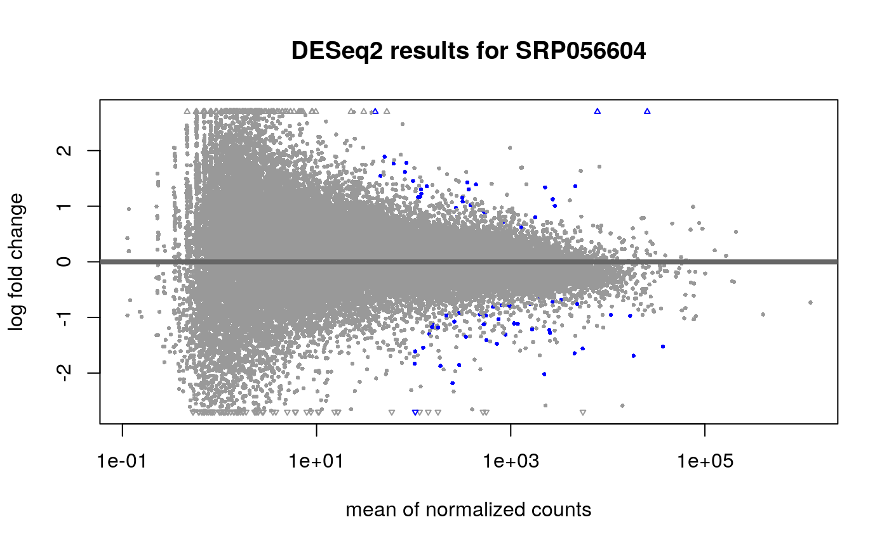
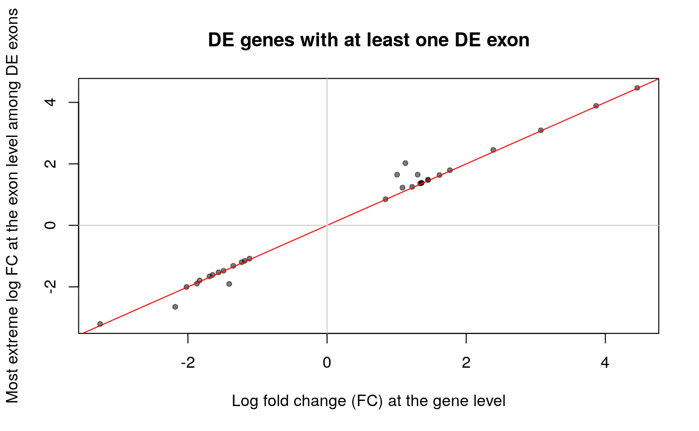
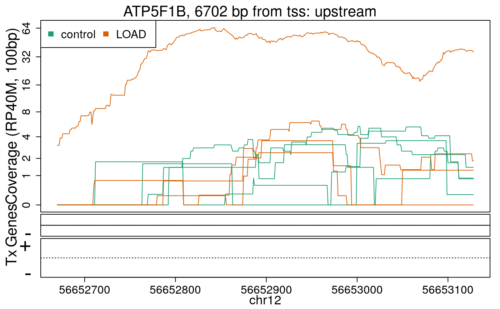

Human RNA-seq data from recount2 and related packages
Leonardo Collado-Torres
Lieber Institute for Brain Development, Johns Hopkins Medical Campuslcolladotor@gmail.com
Abhinav Nellore
Department of Biomedical Engineering, Oregon Health and Science UniversityAndrew E. Jaffe
Lieber Institute for Brain Development, Johns Hopkins Medical CampusMay 29, 2019
Source:vignettes/recount-workshop.Rmd
recount-workshop.RmdWorkshop
Introduction
RNA sequencing (RNA-seq) is now the most widely used high-throughput assay for measuring gene expression. In a typical RNA-seq experiment, several million reads are sequenced per sample. The reads are often aligned to the reference genome using a splice-aware aligner to identify where reads originated. Resulting alignment files are then used to compute count matrices which are used for several analyses such as identifying differentially expressed genes. The Bioconductor project (2) has many contributed packages that specialize in analyzing this type of data and previous workflows have explained how to use them (3–5). Initial steps are typically focused on generating the count matrices. Some pre-computed matrices have been made available via the ReCount project (6) or Bioconductor Experiment data packages such as the airway dataset (7). The count matrices in ReCount have helped others access RNA-seq data avoid having to run the processing pipelines required to compute these matrices. However, in the years since ReCount was published, hundreds of new RNA-seq projects have been carried out and researchers have publicly shared the data publicly.
We uniformly processed over 70,000 publicly available human RNA-seq samples and made the data available via the recount2 resource at jhubiostatistics.shinyapps.io/recount/ (8). Samples in recount2 are grouped by project (over 2,000) originating from the Sequence Read Archive, the Genotype-Tissue Expression study (GTEx) and the Cancer Genome Atlas (TCGA). The processed data can be accessed via the recount Bioconductor package available at bioconductor.org/packages/recount. Together, recount2 and the recount Bioconductor package should be considered a successor to ReCount.
Due to space constraints, the recount2 publication (8) did not cover how to use the recount package and other useful information for carrying out analyses with recount2 data. We describe how the count matrices in recount2 were generated. We also review the R code necessary for using the recount2 data, whose details are important because some of this code involves multiple Bioconductor packages and changing default options. We further show: a) how to augment metadata that comes with datasets with metadata learned from natural language processing of associated papers as well as expression data b) how to perform differential expression analyses, and c) how to visualize the base-pair data available from recount2.
recount2 overview
The recount2 resource provides expression data summarized at different feature levels to enable novel cross-study analyses. Generally when investigators use the term expression, they think about gene expression. But more information can be extracted from RNA-seq data. Once RNA-seq reads have been aligned to the reference genome it is possible to determine the number of aligned reads overlapping each base-pair resulting in the genome base-pair coverage curve as shown in Figure @ref(fig:Figure1). In the example shown in Figure @ref(fig:Figure1) most of the reads overlap known exons from a gene. Those reads can be used to compute a count matrix at the exon or gene feature levels. Some reads span exon-exon junctions (jx) and while most match the annotation, some do not (jx 3 and 4). An exon-exon junction count matrix can be used to identify differentially expressed junctions, which can show which isoforms are differentially expressed given sufficient coverage. For example, junctions 2 and 5 are unique to isoform 2, while junction 6 is unique to isoform 1. The genome base-pair coverage data can be used with derfinder (9) to identify expressed regions, some of them could be un-annotated exons and together with the exon-exon junction data uncover potential new isoforms.
![Overview of the data available in recount2. Reads (pink boxes) aligned to the reference genome can be used to compute a base-pair coverage curve and identify exon-exon junctions (split reads). Gene and exon count matrices are generated using annotation information providing the gene (green boxes) and exon (blue boxes) coordinates together with the base-level coverage curve. The reads spanning exon-exon junctions (jx) are used to compute a third count matrix that might include un-annotated junctions (jx 3 and 4). Without using annotation information, expressed regions (orange box) can be determined from the base-level coverage curve to then construct data-driven count matrices.](https://raw.githubusercontent.com/LieberInstitute/recountWorkshop2020/master/inst/vignettes/Figure1.png)
Overview of the data available in recount2. Reads (pink boxes) aligned to the reference genome can be used to compute a base-pair coverage curve and identify exon-exon junctions (split reads). Gene and exon count matrices are generated using annotation information providing the gene (green boxes) and exon (blue boxes) coordinates together with the base-level coverage curve. The reads spanning exon-exon junctions (jx) are used to compute a third count matrix that might include un-annotated junctions (jx 3 and 4). Without using annotation information, expressed regions (orange box) can be determined from the base-level coverage curve to then construct data-driven count matrices.
recount2 provides gene, exon, and exon-exon junction count matrices both in text format and RangedSummarizedExperiment objects (RSE) (10) as shown in Figure @ref(fig:Figure2). These RSE objects provide information about the expression features (for example gene ids) and the samples. In this workshop we will explain how to add metadata to the RSE objects in recount2 in order to ask biological questions. recount2 also provides coverage data in the form of BigWig files. All four features can be accessed with the recount Bioconductor package (8). recount also allows sending queries to snaptron (11) to search for specific exon-exon junctions.
![recount2 provides coverage count matrices in RangedSummarizedExperiment (rse) objects. Once the rse object has been downloaded and loaded into R, the feature information is accessed with rowRanges(rse) (blue box), the counts with assays(rse)\$counts (pink box) and the sample metadata with colData(rse) (green box). The sample metadata can be expanded using add\_predictions(rse) (orange box) or with custom code (brown box) matching by a unique sample identifier such as the SRA Run id. The rse object is inside the purple box and matching data is highlighted in each box.](https://raw.githubusercontent.com/LieberInstitute/recountWorkshop2020/master/inst/vignettes/Figure2.png)
recount2 provides coverage count matrices in RangedSummarizedExperiment (rse) objects. Once the rse object has been downloaded and loaded into R, the feature information is accessed with rowRanges(rse) (blue box), the counts with assays(rse)$counts (pink box) and the sample metadata with colData(rse) (green box). The sample metadata can be expanded using add_predictions(rse) (orange box) or with custom code (brown box) matching by a unique sample identifier such as the SRA Run id. The rse object is inside the purple box and matching data is highlighted in each box.
Packages used in the workshop
In this workshop we will use several Bioconductor packages. To reproduce the entirety of this workshop, install the packages using the following code after installing R 4.0 from CRAN in order to use Bioconductor version 3.11 or newer.
## Install packages from Bioconductor install.packages("BiocManager") BiocManager::install(c( "recount", "GenomicRanges", "DESeq2", "ideal", "regionReport", "clusterProfiler", "org.Hs.eg.db", "gplots", "derfinder", "rtracklayer", "GenomicFeatures", "bumphunter", "derfinderPlot", "sessioninfo", "GenomicState" ))
Once installed, load all of the packages with the following code.
library("recount") library("GenomicRanges") library("DESeq2") library("ideal") library("regionReport") library("clusterProfiler") library("org.Hs.eg.db") library("gplots") library("derfinder") library("rtracklayer") library("GenomicFeatures") library("bumphunter") library("derfinderPlot") library("GenomicState") library("sessioninfo")
Coverage counts provided by recount2
The most accessible features are the gene, exon and exon-exon junction count matrices. This section explains them in greater detail. Figure @ref(fig:Figure3) shows 16 RNA-seq reads each 3 base-pairs long and a reference genome.

RNA-seq starting data. 16 RNA-seq un-aligned RNA-seq reads 3 base-pairs long are shown (pink boxes) along a reference genome 16 base-pairs long (white box).
Reads in the recount2 resource were aligned with Rail-RNA aligner (12) which is splice-aware and can soft clip reads. Figure @ref(fig:Figure4) shows the reads aligned to the reference genome. Some of the reads are split as they span an exon-exon junction. Two of the reads were soft clipped meaning that just a portion of the reads aligned (top left in purple).

Aligned RNA-seq reads. Spice-aware RNA-seq aligners such as Rail-RNA are able to find the coordinates to which the reads map, even if they span exon-exon junctions (connected boxes). Rail-RNA soft clips some reads (purple boxes with rough edges) such that a portion of these reads align to the reference genome.
In order to compute the gene and exon count matrices we first have to process the annotation, which for recount2 is Gencode v25 (CHR regions) with hg38 coordinates. Although recount can generate count matrices for other annotations using hg38 coordinates. Figure @ref(fig:Figure5) shows two isoforms for a gene composed of 3 different exons.

Gene annotation. A single gene with two isoforms composed by three distinct exons (blue boxes) is illustrated. Exons 1 and 3 share the first five base-pairs while exon 2 is common to both isoforms.
The coverage curve is at the base-pair resolution, so if we are interested in gene counts we have to be careful not to double count base-pairs 1 through 5 that are shared by exons 1 and 3 (Figure @ref(fig:Figure5)). Using the function disjoin() from GenomicRanges (13) we identified the distinct exonic sequences (disjoint exons). The following code defines the exon coordinates that match Figure @ref(fig:Figure5) and the resulting disjoint exons for our example gene. The resulting disjoint exons are shown in Figure @ref(fig:Figure6).
library("GenomicRanges") exons <- GRanges("seq", IRanges(start = c(1, 1, 13), end = c(5, 8, 15))) exons
## GRanges object with 3 ranges and 0 metadata columns:
## seqnames ranges strand
## <Rle> <IRanges> <Rle>
## [1] seq 1-5 *
## [2] seq 1-8 *
## [3] seq 13-15 *
## -------
## seqinfo: 1 sequence from an unspecified genome; no seqlengthsdisjoin(exons)
## GRanges object with 3 ranges and 0 metadata columns:
## seqnames ranges strand
## <Rle> <IRanges> <Rle>
## [1] seq 1-5 *
## [2] seq 6-8 *
## [3] seq 13-15 *
## -------
## seqinfo: 1 sequence from an unspecified genome; no seqlengths
Disjoint exons. Windows of distinct exonic sequence for the example gene. Disjoint exons 1 and 2 form exon 1.
Now that we have disjoint exons, we can compute the base-pair coverage for each of them as shown in Figure @ref(fig:Figure7). That is, for each base-pair that corresponds to exonic sequence, we compute the number of reads overlapping that given base-pair. For example, the first base-pair is covered by 3 different reads and it does not matter whether the reads themselves were soft clipped. Not all reads or bases of a read contribute information to this step as some do not overlap known exonic sequence (light pink in Figure @ref(fig:Figure7)).

Base-pair coverage counting for exonic base-pairs. At each exonic base-pair we compute the number of reads overlapping that given base-pair. The first base (orange arrow) has 3 reads overlapping that base-pair. Base-pair 11 has a coverage of 3 but does not overlap known exonic sequence, so that information is not used for the gene and exon count matrices (grey arrow). If a read partially overlaps exonic sequence, only the portion that overlaps is used in the computation (see right most read).
With base-pair coverage for the exonic sequences computed, the coverage count for each distinct exon is simply the sum of the base-pair coverage for each base in a given distinct exon. For example, the coverage count for disjoint exon 2 is \(2 + 2 + 3 = 7\) as shown in Figure @ref(fig:Figure8). The gene coverage count is then \(\sum_i^n \texttt{coverage}_i\) where \(n\) is the number of exonic base-pairs for the gene and is equal to the sum of the coverage counts for its disjoint exons as shown in Figure @ref(fig:Figure8).

Exon and gene coverage counts. The coverage counts for each disjoint exon are the sum of the base-pair coverage. The gene coverage count is the sum of the disjoint exons coverage counts.
For the exons, recount2 provides the disjoint exons coverage count matrix. It is possible to reconstruct the exon coverage count matrix by summing the coverage count for the disjoint exons that compose each exon. For example, the coverage count for exon 1 would be the sum of the coverage counts for disjoint exons 1 and 2, that is \(19 + 7 = 26\). Some methods might assume that double counting of the shared base-pairs was performed while others assume or recommend the opposite.
Scaling coverage counts
The coverage counts described previously are the ones actually included in the rse objects in recount2 instead of typical read count matrices. This is an important difference to keep in mind as most methods were developed for read count matrices. Part of the sample metadata available from recount2 includes the read length and number of mapped reads. Given a target library size (40 million reads by default), the coverage counts in recount2 can be scaled to read counts for a given library size as shown in Equation @ref(eq:scale). Note that the resulting scaled read counts are not necessarily integers so it might be neccessary to round them if a differential expression method assumes integer data.
\[\begin{equation} \frac{\sum_i^n \text{coverage}_i }{\text{Read Length}} * \frac{\text{target}}{\text{mapped}} = \text{scaled read counts} (\#eq:scale) \end{equation}\]
From Figure @ref(fig:Figure4) we know that Rail-RNA soft clipped some reads, so a more precise measure than the denominator of Equation @ref(eq:scale) is the area under coverage (AUC) which is the sum of the coverage for all base-pairs of the genome, regardless of the annotation as shown in Figure @ref(fig:Figure9). Without soft clipping reads, the AUC would be equal to the number of reads mapped multiplied by the read length. So for our example gene, the scaled counts for a library size of 20 reads would be \(\frac{36}{45} * 20 = 16\) and in general calculated with Equation @ref(eq:scale2). The following code shows how to compute the AUC given a set of aligned reads and reproduce a portion of Figure @ref(fig:Figure9).
\[\begin{equation} \frac{\sum_i^n \text{coverage}_i }{\text{AUC}} * \text{target} = \text{scaled read counts} (\#eq:scale2) \end{equation}\]
## Take the example and translate it to R code library("GenomicRanges") reads <- GRanges("seq", IRanges( start = rep( c(1, 2, 3, 4, 5, 7, 8, 9, 10, 13, 14), c(3, 1, 2, 1, 2, 1, 2, 1, 2, 4, 1) ), width = rep( c(1, 3, 2, 3, 1, 2, 1, 3, 2, 3, 2, 1, 3), c(1, 4, 1, 2, 1, 1, 2, 2, 1, 1, 2, 1, 1) ) )) ## Get the base-level genome coverage curve cov <- as.integer(coverage(reads)$seq) ## AUC sum(cov)
## [1] 45## Code for reproducing the bottom portion of Figure 8. pdf("base_pair_coverage.pdf", width = 20) par(mar = c(5, 6, 4, 2) + 0.1) plot(cov, type = "o", col = "violetred1", lwd = 10, ylim = c(0, 5), xlab = "Genome", ylab = "Coverage", cex.axis = 2, cex.lab = 3, bty = "n" ) polygon(c(1, seq_len(length(cov)), length(cov)), c(0, cov, 0), border = NA, density = -1, col = "light blue" ) points(seq_len(length(cov)), cov, col = "violetred1", type = "o", lwd = 10 ) dev.off()

Area under coverage (AUC). The area under coverage is the sum of the base-pair coverage for all positions in the genome regardless of the annotation. It is the area under the base-level coverage curve shown as the light blue area under the pink curve.
The recount function scale_counts() computes the scaled read counts for a target library size of 40 million mapped reads and we highly recommend using it before doing other analyses. The following code shows how to use scale_counts() and that the resulting read counts per sample can be lower than the target size (40 million). This happens when not all mapped reads overlap known exonic base-pairs of the genome. In our example, the gene has a scaled count of 16 reads for a library size of 20 reads, meaning that 4 reads did not overlap exonic sequences.
## Check that the number of reads is less than or equal to 40 million ## after scaling. library("recount") rse_scaled <- scale_counts(rse_gene_SRP009615, round = FALSE) summary(colSums(assays(rse_scaled)$counts)) / 1e6
## Min. 1st Qu. Median Mean 3rd Qu. Max.
## 22.62 29.97 34.00 31.96 34.86 36.78Enriching the annotation
Data in recount2 can be used for annotation-agnostic analyses and enriching the known annotation. Just like exon and gene coverage count matrices, recount2 provides exon-exon junction count matrices. These matrices can be used to identify new isoforms (Figure @ref(fig:Figure10)) or identify differentially expressed isoforms. For example, exon-exon junctions 2, 5 and 6 in Figure @ref(fig:Figure1) are only present in one annotated isoform. Snaptron (11) allows programatic and high-level queries of the exon-exon junction information and it is graphical user interface is specially useful for visualizing this data. Inside R, the recount function snaptron_query() can be used for searching specific exon-exon junctions in recount2. A full R interface to Snaptron is under development.

Exon-exon junctions go beyond the annotation. Reads spanning exon-exon junctions are highlighted and compared against the annotation. Three of them match the annotated junctions, but one (blue and orange read) spans an un-annotated exon-exon junction with the left end matching the annotation and the right end hinting at a possible new isoform for this gene (blue and orange isoform).
The base-pair coverage data from recount2 can be used together with derfinder (9) to identify expressed regions of the genome, providing another annotation-agnostic analysis of the expression data. Using the function expressed_regions() we can identify regions of expression based on a given data set in recount2. These regions might overlap known exons but can also provide information about intron retention events (Figure @ref(fig:Figure11)), improve detection of exon boundaries (Figure @ref(fig:Figure12)), and help identify new exons (Fig @ref(fig:Figure1)) or expressed sequences in intergenic regions. Using coverage_matrix() we can compute a coverage matrix based on the expressed regions or another set of genomic intervals. The resulting matrix can then be used for a differential expression analysis, just like the exon, gene and exon-exon junction matrices.

Intron retention events. Some reads might align with known intronic segments of the genome and provide information for exploring intron retention events (pink read). Some might support an intron retention event or a new isoform when coupled with exon-exon junction data (orange read).

Exon boundaries. Reads that go beyond the known exon boundaries can inform us of whether the annotated boundaries are correct or if there was a run-off transcription event.
Gene level analysis
Having reviewed how the coverage counts in recount2 were produced, we can now do a differential expression analysis. We will use data from GSE67333 (14) whose overall design was: We performed directional RNA sequencing on high quality RNA samples extracted from hippocampi of 4 late onset Alzheimer’s disease (LOAD) and 4 age-matched controls. The function download_study() requires a SRA accession id which can be found using abstract_search(). download_study() can then be used to download the gene coverage count data as well as other expression features. The files are saved in a directory named after the SRA accession id, in this case SRP056604.
To facilitate this workshop, we included the data in the recountWorkshop2020 package. It can be located with the system.file() function as shown below.
## Locate path with the data library("recountWorkshop2020") local_path <- system.file("extdata", "SRP056604", package = "recountWorkshop2020") dir(local_path)
## [1] "bw" "rse_exon.Rdata" "rse_gene.Rdata" "SraRunTable.txt"The commands should work with the data hosted from recount2 if there are no problems with the wifi connection. Although we prefer that you use the pre-installed data for this workshop.
library("recount") ## Find the project id by searching abstracts of studies abstract_search("hippocampi of 4")
## number_samples species
## 1643 8 human
## abstract
## 1643 Our data provide a comprehensive list of transcriptomics alterations and warrant holistic approach including both coding and non-coding RNAs in functional studies aimed to understand the pathophysiology of LOAD Overall design: We performed directional RNA sequencing on high quality RNA samples extracted from hippocampi of 4 late onset Alzheimer's diseas (LOAD) and 4 age-matched controls.
## project
## 1643 SRP056604## Download the data if it is not there if (!file.exists(file.path(local_path, "rse_gene.Rdata"))) { ## In case you decide to download the data instead of using the ## pre-installed data local_path <- "SRP056604" download_study("SRP056604", type = "rse-gene") } ## Check that the file was downloaded file.exists(file.path(local_path, "rse_gene.Rdata"))
## [1] TRUE## Loading objects:
## rse_geneThe coverage count matrices are provided as RangedSummarizedExperiment objects (RSE) (10). These objects store information at the feature level, the samples and the actual count matrix as shown in Figure 1 of Love et al., 2016 (4). Figure @ref(fig:Figure2) shows the actual RSE objects provided by recount2 and how to access the different portions of the data. Using a unique sample id such as the SRA Run id it is possible to expand the sample metadata. This can be done using the predicted phenotype provided by add_predictions() (15), pulling information from GEO via find_geo() and geo_characteristics(), or with custom code. As of 2019, you can also use add_metadata(source = "recount_brain_v2") to add curated sample metadata from brain studies (16).
Metadata
Using the colData() function we can access sample metadata. More information on these metadata is provided in the supplementary material of the recount2 paper (8), and we provide a brief review here. The RSE objects for SRA data sets include 21 columns with mostly technical information. The GTEx and TCGA RSE objects include additional metadata as available from the raw sources. In particular, we compiled metadata for GTEx using the v6 phenotype information available at gtexportal.org, and we put together a large table of TCGA case and sample information by combining information accumulated across Seven Bridges’ Cancer Genomics Cloud and TCGAbiolinks (17).
## One row per sample, one column per phenotype variable dim(colData(rse_gene))
## [1] 8 21## Mostly technical variables are included colnames(colData(rse_gene))
## [1] "project"
## [2] "sample"
## [3] "experiment"
## [4] "run"
## [5] "read_count_as_reported_by_sra"
## [6] "reads_downloaded"
## [7] "proportion_of_reads_reported_by_sra_downloaded"
## [8] "paired_end"
## [9] "sra_misreported_paired_end"
## [10] "mapped_read_count"
## [11] "auc"
## [12] "sharq_beta_tissue"
## [13] "sharq_beta_cell_type"
## [14] "biosample_submission_date"
## [15] "biosample_publication_date"
## [16] "biosample_update_date"
## [17] "avg_read_length"
## [18] "geo_accession"
## [19] "bigwig_file"
## [20] "title"
## [21] "characteristics"Technical variables
Several of these technical variables include the number of reads as reported by SRA, the actual number of reads Rail-RNA was able to download (which might be lower in some cases), the number of reads mapped by Rail-RNA, whether the sample is paired-end or not, the coverage AUC and the average read length (times 2 for paired-end samples). Note that sample with SRA Run id SRR2071341 has about 240.8 million reads as reported by SRA, while it has 120.4 million spots reported in https://trace.ncbi.nlm.nih.gov/Traces/sra/?run=SRR2071341; that is because it is a paired-end sample (2 reads per spot). These details are important for those interested on writing alternative scaling functions to scale_counts().
## Input reads: number reported by SRA might be larger than number ## of reads Rail-RNA downloaded meta <- all_metadata()
## 2020-07-26 21:24:06 downloading the metadata to /tmp/RtmpKDI1FD/metadata_clean_sra.Rdatameta[ meta$run == "SRR2071341", c("read_count_as_reported_by_sra", "reads_downloaded") ]
## DataFrame with 1 row and 2 columns
## read_count_as_reported_by_sra reads_downloaded
## <integer> <integer>
## 1 240797206 240797206summary(meta$proportion_of_reads_reported_by_sra_downloaded[ meta$project == "SRP045638" ])
## Min. 1st Qu. Median Mean 3rd Qu. Max.
## 0.5719 0.9165 0.9788 0.9532 1.0000 1.0000## AUC information used by scale_counts() by default head(colData(rse_gene)$auc)
## [1] 14058249889 13996129504 13578647527 14599138400 16423440640 15559854293## Alternatively, scale_counts() can use the number of mapped reads ## and other information colData(rse_gene)[, c("mapped_read_count", "paired_end", "avg_read_length")]
## DataFrame with 8 rows and 3 columns
## mapped_read_count paired_end avg_read_length
## <integer> <logical> <integer>
## SRR1931819 160584474 FALSE 99
## SRR1931818 155722526 FALSE 99
## SRR1931817 164110375 FALSE 99
## SRR1931816 165119594 FALSE 99
## SRR1931815 180961318 FALSE 99
## SRR1931814 170579381 FALSE 99
## SRR1931813 171525236 FALSE 99
## SRR1931812 178912737 FALSE 99Biological information
Other metadata variables included provide more biological information, such as the SHARQ beta tissue and cell type predictions, which are based on processing the abstract of papers. This information is available for some of the SRA projects.
## SHARQ tissue predictions: not present for all studies head(colData(rse_gene)$sharq_beta_tissue)
## [1] NA NA NA NA NA NAhead(colData(rse_gene_SRP009615)$sharq_beta_tissue)
## [1] "blood" "blood" "blood" "blood" "blood" "blood"For some data sets we were able to find the GEO accession ids, which we then used to create the title and characteristics variables. If present, the characteristics information can be used to create additional metadata variables by parsing the CharacterList in which it is stored. Since the input is free text, sometimes more than one type of wording is used to describe the same information. Meaning that we might have to process that information in order to build a more convenient variable, such as a factor vector.
## GEO information was absent for the SRP056604 data set colData(rse_gene)[, c("geo_accession", "title", "characteristics")]
## DataFrame with 8 rows and 3 columns
## geo_accession title
## <character> <character>
## SRR1931819 GSM1645003 CTRL4
## SRR1931818 GSM1645002 CTRL3
## SRR1931817 GSM1645001 CTRL2
## SRR1931816 GSM1645000 CTRL1
## SRR1931815 GSM1644999 LOAD4
## SRR1931814 GSM1644998 LOAD3
## SRR1931813 GSM1644997 LOAD2
## SRR1931812 GSM1644996 LOAD1
## characteristics
## <CharacterList>
## SRR1931819 age (yrs): 85,subject group: age-m..,gender: female,...
## SRR1931818 age (yrs): >90,subject group: age-m..,gender: male,...
## SRR1931817 age (yrs): 83,subject group: age-m..,gender: male,...
## SRR1931816 age (yrs): 77,subject group: age-m..,gender: female,...
## SRR1931815 age (yrs): 82,subject group: LOAD ..,gender: female,...
## SRR1931814 age (yrs): 83,subject group: LOAD ..,gender: male,...
## SRR1931813 age (yrs): 87,subject group: LOAD ..,gender: female,...
## SRR1931812 age (yrs): 82,subject group: LOAD ..,gender: female,...## GEO information for the SRP009615 data set head(colData(rse_gene_SRP009615)$geo_accession)
## [1] "GSM836270" "GSM836271" "GSM836272" "GSM836273" "GSM847561" "GSM847562"head(colData(rse_gene_SRP009615)$title, 2)
## [1] "K562 cells with shRNA targeting SRF gene cultured with no doxycycline (uninduced - UI), rep1."
## [2] "K562 cells with shRNA targeting SRF gene cultured with doxycycline for 48 hours (48 hr), rep1."head(colData(rse_gene_SRP009615)$characteristics, 2)
## CharacterList of length 2
## [[1]] cells: K562 shRNA expression: no treatment: Puromycin
## [[2]] cells: K562 shRNA expression: yes, targeting SRF treatment: Puromycin, doxycycline## Similar but not exactly the same wording used for two different samples colData(rse_gene_SRP009615)$characteristics[[1]]
## [1] "cells: K562" "shRNA expression: no" "treatment: Puromycin"colData(rse_gene_SRP009615)$characteristics[[11]]
## [1] "cell line: K562"
## [2] "shRNA expression: no shRNA expression"
## [3] "treatment: Puromycin"## For study SRP056604 we have characteristics information ## Note the > symbol in the age for the second sample colData(rse_gene)$characteristics[[1]]
## [1] "age (yrs): 85" "subject group: age-matched control"
## [3] "gender: female" "apoe genotype: 2/3"
## [5] "braak stage: II" "tissue: Hippocampus"colData(rse_gene)$characteristics[[2]]
## [1] "age (yrs): >90" "subject group: age-matched control"
## [3] "gender: male" "apoe genotype: 3/3"
## [5] "braak stage: II" "tissue: Hippocampus"Since we have the characteristics information for study SRP056604, lets extract some data from them. We can extract the case status, sex and age.
## Get the case status: either LOAD or control colData(rse_gene)$case <- factor( sapply(colData(rse_gene)$characteristics, function(x) { ifelse(any(grepl("LOAD", x)), "LOAD", "control") }) ) ## Get the sex colData(rse_gene)$sex <- factor( sapply(colData(rse_gene)$characteristics, function(x) { ifelse(any(grepl("female", x)), "female", "male" ) }) ) ## Extract the age. Note that one of them is a bit more complicated. colData(rse_gene)$age <- sapply( colData(rse_gene)$characteristics, function(x) { y <- x[grep("age.*(yrs)", x)] as.integer(gsub("age.*\\(yrs\\): |>", "", y)) } )
Now that we have added the biological metadata variables, we can explore them.
table(colData(rse_gene)$case, colData(rse_gene)$sex)
##
## female male
## control 2 2
## LOAD 3 1table(colData(rse_gene)$case, colData(rse_gene)$age)
##
## 77 82 83 85 87 90
## control 1 0 1 1 0 1
## LOAD 0 2 1 0 1 0From the previous tables, case seems to be balanced by sex and age.
As shown in Figure @ref(fig:Figure2), we can expand the biological metadata information by adding predictions based on RNA-seq data (15). The predictions include information about sex, sample source (cell line vs tissue), tissue and the sequencing strategy used. To add the predictions, simply use the function add_predictions() to expand the colData() slot.
## Before adding predictions dim(colData(rse_gene))
## [1] 8 24## Add the predictions rse_gene <- add_predictions(rse_gene)
## 2020-07-26 21:24:10 downloading the predictions to /tmp/RtmpKDI1FD/PredictedPhenotypes_v0.0.06.rda## Loading objects:
## PredictedPhenotypes## After adding the predictions dim(colData(rse_gene))
## [1] 8 36## Explore the variables colData(rse_gene)[, 25:ncol(colData(rse_gene))]
## DataFrame with 8 rows and 12 columns
## reported_sex predicted_sex accuracy_sex reported_samplesource
## <factor> <factor> <numeric> <factor>
## SRR1931819 NA male 0.862637 tissue
## SRR1931818 NA male 0.862637 tissue
## SRR1931817 NA female 0.862637 tissue
## SRR1931816 NA female 0.862637 tissue
## SRR1931815 NA female 0.862637 tissue
## SRR1931814 NA female 0.862637 tissue
## SRR1931813 NA male 0.862637 tissue
## SRR1931812 NA female 0.862637 tissue
## predicted_samplesource accuracy_samplesource reported_tissue
## <factor> <numeric> <factor>
## SRR1931819 tissue 0.89235 NA
## SRR1931818 tissue 0.89235 NA
## SRR1931817 tissue 0.89235 NA
## SRR1931816 tissue 0.89235 NA
## SRR1931815 tissue 0.89235 NA
## SRR1931814 tissue 0.89235 NA
## SRR1931813 tissue 0.89235 NA
## SRR1931812 tissue 0.89235 NA
## predicted_tissue accuracy_tissue reported_sequencingstrategy
## <factor> <numeric> <factor>
## SRR1931819 Brain 0.518825 SINGLE
## SRR1931818 Brain 0.518825 SINGLE
## SRR1931817 Brain 0.518825 SINGLE
## SRR1931816 Brain 0.518825 SINGLE
## SRR1931815 Brain 0.518825 SINGLE
## SRR1931814 Brain 0.518825 SINGLE
## SRR1931813 Brain 0.518825 SINGLE
## SRR1931812 Brain 0.518825 SINGLE
## predicted_sequencingstrategy accuracy_sequencingstrategy
## <factor> <numeric>
## SRR1931819 SINGLE 0.908575
## SRR1931818 SINGLE 0.908575
## SRR1931817 SINGLE 0.908575
## SRR1931816 SINGLE 0.908575
## SRR1931815 SINGLE 0.908575
## SRR1931814 SINGLE 0.908575
## SRR1931813 SINGLE 0.908575
## SRR1931812 SINGLE 0.908575From the predictions, we see that all samples are predicted to be from the brain, which matches the samples description. We also have predicted sex which we can compare against the reported sex.
table( "Observed" = colData(rse_gene)$sex, "Predicted" = colData(rse_gene)$predicted_sex )
## Predicted
## Observed female male Unassigned
## female 3 2 0
## male 2 1 0We have 4 sex prediction mismatches, which is very high. Let’s explore whether the sex is matching is related to other variables.
## Is the sex matching? TRUE for yes. colData(rse_gene)$matching_sex <- as.character(colData(rse_gene)$sex) == as.character(colData(rse_gene)$predicted_sex) ## Matching sex vs other variables table("Matched Sex" = colData(rse_gene)$matching_sex, colData(rse_gene)$case)
##
## Matched Sex control LOAD
## FALSE 2 2
## TRUE 2 2table("Matched Sex" = colData(rse_gene)$matching_sex, colData(rse_gene)$age)
##
## Matched Sex 77 82 83 85 87 90
## FALSE 0 0 2 1 1 0
## TRUE 1 2 0 0 0 1boxplot(colData(rse_gene)$mapped_read_count ~ colData(rse_gene)$matching_sex, ylab = "Mapped read count", xlab = "Matching sex" )

There are no discernible differences by case, age or mapped read count when compared with the matching sex status.
Adding more information
Ultimately, more sample metadata information could be available elsewhere which can be useful for analyses. This information might be provided in the paper describing the data, the SRA Run Selector or other sources. As shown in Figure @ref(fig:Figure2), it is possible to append information to the colData() slot as long as there is a unique sample identifier such as the SRA Run id.
For our example use case, project SRP056604 has redundant information with the characteristics and the SRA Run selector https://trace.ncbi.nlm.nih.gov/Traces/study/?acc=SRP056604. However, this might not be the case for other projects. While the SRA Run Selector information is redundant in this case, we can practice adding it. We can download that information into text file named SraRunTable.txt by default, then load it into R, sort it appropriately and then append it to the colData() slot. Below we do so for the SRP056604 project.
## Save the information from ## https://trace.ncbi.nlm.nih.gov/Traces/study/?acc=SRP056604 ## to a table. We saved the file as SRP056604/SraRunTable.txt. file.exists(file.path(local_path, "SraRunTable.txt"))
## [1] TRUE## Run apoe_genotype Assay.Type AvgSpotLen Bases BioProject
## 1 SRR1931812 3/3 RNA-Seq 99 18563956983 PRJNA279526
## 2 SRR1931813 3/3 RNA-Seq 99 17851505463 PRJNA279526
## 3 SRR1931814 3/3 RNA-Seq 99 17673638103 PRJNA279526
## 4 SRR1931815 3/3 RNA-Seq 99 18671875299 PRJNA279526
## 5 SRR1931816 2/3 RNA-Seq 99 17533708731 PRJNA279526
## 6 SRR1931817 Not available RNA-Seq 99 17215577181 PRJNA279526
## BioSample braak_stage Bytes Center.Name Consent DATASTORE.filetype
## 1 SAMN03448725 VI 12728839626 GEO public sra,fastq
## 2 SAMN03448726 V 12226156492 GEO public sra,fastq
## 3 SAMN03448730 VI 12122197205 GEO public fastq,sra
## 4 SAMN03448728 VI 13172185063 GEO public fastq,sra
## 5 SAMN03448727 I 12139059865 GEO public sra,fastq
## 6 SAMN03448729 II 11978968856 GEO public sra,fastq
## DATASTORE.provider DATASTORE.region Experiment gender
## 1 s3,ncbi,gs ncbi.public,s3.us-east-1,gs.US SRX970047 female
## 2 s3,ncbi,gs ncbi.public,s3.us-east-1,gs.US SRX970048 female
## 3 gs,s3,ncbi gs.US,s3.us-east-1,ncbi.public SRX970049 male
## 4 ncbi,s3,gs s3.us-east-1,ncbi.public,gs.US SRX970050 female
## 5 s3,ncbi,gs ncbi.public,gs.US,s3.us-east-1 SRX970051 female
## 6 gs,ncbi,s3 ncbi.public,s3.us-east-1,gs.US SRX970052 male
## GEO_Accession..exp. Instrument LibraryLayout LibrarySelection
## 1 GSM1644996 Illumina HiSeq 2000 SINGLE cDNA
## 2 GSM1644997 Illumina HiSeq 2000 SINGLE cDNA
## 3 GSM1644998 Illumina HiSeq 2000 SINGLE cDNA
## 4 GSM1644999 Illumina HiSeq 2000 SINGLE cDNA
## 5 GSM1645000 Illumina HiSeq 2000 SINGLE cDNA
## 6 GSM1645001 Illumina HiSeq 2000 SINGLE cDNA
## LibrarySource Organism Platform ReleaseDate Sample.Name
## 1 TRANSCRIPTOMIC Homo sapiens ILLUMINA 2015-04-01T00:00:00Z GSM1644996
## 2 TRANSCRIPTOMIC Homo sapiens ILLUMINA 2015-04-01T00:00:00Z GSM1644997
## 3 TRANSCRIPTOMIC Homo sapiens ILLUMINA 2015-04-01T00:00:00Z GSM1644998
## 4 TRANSCRIPTOMIC Homo sapiens ILLUMINA 2015-04-01T00:00:00Z GSM1644999
## 5 TRANSCRIPTOMIC Homo sapiens ILLUMINA 2015-04-01T00:00:00Z GSM1645000
## 6 TRANSCRIPTOMIC Homo sapiens ILLUMINA 2015-04-01T00:00:00Z GSM1645001
## source_name SRA.Study
## 1 LOAD_hippocampi SRP056604
## 2 LOAD_hippocampi SRP056604
## 3 LOAD_hippocampi SRP056604
## 4 LOAD_hippocampi SRP056604
## 5 age-matched control_hippocampi SRP056604
## 6 age-matched control_hippocampi SRP056604
## subject_group tissue
## 1 LOAD (late onset of Alzheimer’s disease) Hippocampus
## 2 LOAD (late onset of Alzheimer’s disease) Hippocampus
## 3 LOAD (late onset of Alzheimer’s disease) Hippocampus
## 4 LOAD (late onset of Alzheimer’s disease) Hippocampus
## 5 age-matched control Hippocampus
## 6 age-matched control Hippocampus## Add the sra_ prefix to the variable names colnames(sra) <- paste0("sra_", colnames(sra)) ## Choose some variables we want to add sra_vars <- paste0("sra_", c("braak_stage", "gender", "tissue")) ## Re-organize the SRA table based on the SRA Run ids we have sra <- sra[match(colData(rse_gene)$run, sra$sra_Run), ] ## Double check the order identical(colData(rse_gene)$run, as.character(sra$sra_Run))
## [1] TRUE## Append the variables of interest colData(rse_gene) <- cbind(colData(rse_gene), sra[, sra_vars]) ## Final dimensions dim(colData(rse_gene))
## [1] 8 40## Explore result colData(rse_gene)[, 38:ncol(colData(rse_gene))]
## DataFrame with 8 rows and 3 columns
## sra_braak_stage sra_gender sra_tissue
## <character> <character> <character>
## SRR1931819 II female Hippocampus
## SRR1931818 II male Hippocampus
## SRR1931817 II male Hippocampus
## SRR1931816 I female Hippocampus
## SRR1931815 VI female Hippocampus
## SRR1931814 VI male Hippocampus
## SRR1931813 V female Hippocampus
## SRR1931812 VI female Hippocampus## The sex information from the 'characteristics' and the ## SRA Run Selector match table(colData(rse_gene)$sra_gender, colData(rse_gene)$sex)
##
## female male
## female 5 0
## male 0 3Add curated metadata for brain studies

Example variables (blue column) and values of the data present in recount-brain.
To facilitate analyses of brain studies we further curated 62 SRA projects and merged them with GTEx and TCGA brain samples to create recount-brain (16) which contains brain sample metadata (Fig @ref(fig:Figure13)). SRP056604 is one of those 62 projects so we can easily include all this metadata to our RSE object using the add_metadata() function in recount. It works very similar to add_predictions().
![Uses of recount-brain and its relationship with recount2 . recount-brain facilitates identifying project(s) of interest (purple box) programmatically or interactively through https://jhubiostatistics.shinyapps.io/recount-brain/ . After downloading expression data from recount2 , recount-brain can enrich the sample metadata for brain studies. This information can be used to perform analyses to find differentially expressed genes and enriched gene sets such as those exemplified with SRA Study SRP027383 (Bao et al., 2014) , where the top differentially expressed gene among glioblastoma samples in recount2 is SCM4 . Black boxes represent R code with functions highlighted in blue, input arguments in green, and R objects in white.](https://raw.githubusercontent.com/LieberInstitute/recountWorkshop2020/master/inst/vignettes/Figure2.jpg)
Uses of recount-brain and its relationship with recount2 . recount-brain facilitates identifying project(s) of interest (purple box) programmatically or interactively through https://jhubiostatistics.shinyapps.io/recount-brain/ . After downloading expression data from recount2 , recount-brain can enrich the sample metadata for brain studies. This information can be used to perform analyses to find differentially expressed genes and enriched gene sets such as those exemplified with SRA Study SRP027383 (Bao et al., 2014) , where the top differentially expressed gene among glioblastoma samples in recount2 is SCM4 . Black boxes represent R code with functions highlighted in blue, input arguments in green, and R objects in white.
We can use add_predictions() without specifying the rse argument as shown below to download the full recount-brain curated metadata (Fig @ref(fig:Figure14)).
## Don't specify the rse argument to download the full recount_brain table recount_brain <- add_metadata(source = "recount_brain_v2")
## 2020-07-26 21:24:11 downloading the recount_brain metadata to /tmp/RtmpKDI1FD/recount_brain_v2.Rdata## Loading objects:
## recount_braindim(recount_brain)
## [1] 6547 65## Explore some of the variables for SRP056604 recount_brain[recount_brain$Study_full == "SRP056604", c( "age", "age_units", "sex", "rin", "pmi", "pmi_units", "pathology", "disease_status" )]
## age age_units sex rin pmi pmi_units pathology
## SRP056604.1 82 Years female 6.90 2.33 Hours Braak Stage VI
## SRP056604.2 87 Years female 6.50 2.00 Hours Braak Stage V
## SRP056604.3 83 Years male 7.00 2.83 Hours Braak Stage VI
## SRP056604.4 82 Years female 6.70 3.00 Hours Braak Stage VI
## SRP056604.5 77 Years female NA 2.50 Hours Braak Stage I
## SRP056604.6 83 Years male 6.50 4.50 Hours Braak Stage II
## SRP056604.7 90 Years male 8.60 2.00 Hours Braak Stage II
## SRP056604.8 85 Years female 8.32 1.00 Hours Braak Stage II
## disease_status
## SRP056604.1 Disease
## SRP056604.2 Disease
## SRP056604.3 Disease
## SRP056604.4 Disease
## SRP056604.5 Control
## SRP056604.6 Control
## SRP056604.7 Control
## SRP056604.8 ControlOr we can specify the rse argument and append these columns to our RSE object (Fig @ref(fig:Figure14)). In the case of the SRP056604 project, by using add_metadata() we can skip over all the steps of downloading the SRA table and processing the GEO characteristics information, plus get additional information that was absent from the previous data sources such as the postmorterm interval (PMI) and the RNA integrity number (RIN).
dim(colData(rse_gene))
## [1] 8 40rse_gene <- add_metadata(rse_gene, source = "recount_brain_v2")
## 2020-07-26 21:24:12 downloading the recount_brain metadata to /tmp/RtmpKDI1FD/recount_brain_v2.Rdata## Loading objects:
## recount_brain## 2020-07-26 21:24:13 found 8 out of 8 samples in the recount_brain metadatadim(colData(rse_gene))
## [1] 8 104Overall, you can explore interactively recount-brain at jhubiostatistics.shinyapps.io/recount-brain/. Finally, note how add_metadata() is designed to be expanded for more curated metadata, so if you would like to provide more data please let us know!
DE setup
Now that we have all the metadata available we can perform a differential expression analysis. Lets look for differences by case when adjusting for the sex, age of the sample and PMI.
As we saw earlier in Figure @ref(fig:Figure9), it is important to scale the coverage counts to read counts. To highlight the fact that we scaled the counts, we will use a new object name and delete the previous one. However, in practice we would simply overwrite the rse object with the output of scale_counts(rse).
## Scale counts rse_gene_scaled <- scale_counts(rse_gene) ## To highlight that we scaled the counts rm(rse_gene)
DE analysis
Now that we have scaled the counts, there are multiple differential expression packages we could use as described elsewhere (3,4). Since we have very few samples per group, we will use DESeq2 (18). The model we will use will test for differential expression between LOAD and control samples, adjusting for sex and age. In a real use case we might have to explore the results with different models.
library("DESeq2") ## Specify design and switch to DESeq2 format dds <- DESeqDataSet(rse_gene_scaled, ~ sex + age + pmi + case)
## converting counts to integer mode## the design formula contains one or more numeric variables with integer values,
## specifying a model with increasing fold change for higher values.
## did you mean for this to be a factor? if so, first convert
## this variable to a factor using the factor() function## the design formula contains one or more numeric variables that have mean or
## standard deviation larger than 5 (an arbitrary threshold to trigger this message).
## it is generally a good idea to center and scale numeric variables in the design
## to improve GLM convergence.## Perform DE analysis dds <- DESeq(dds, test = "LRT", reduced = ~ sex + age + pmi, fitType = "local" )
## estimating size factors## estimating dispersions## gene-wise dispersion estimates## mean-dispersion relationship## final dispersion estimates## fitting model and testing## 2 rows did not converge in beta, labelled in mcols(object)$fullBetaConv. Use larger maxit argument with nbinomLRT## Explore results plotMA(dds, main = "DESeq2 results for SRP056604", contrast = c("case", "LOAD", "control"), alpha = 0.01 )

We can use ideal (19) to make a volcano plot of the DE results.
res <- results(dds, contrast = c("case", "LOAD", "control"), alpha = 0.01) ## Make a volcano plot library("ideal") plot_volcano(res, FDR = 0.01)

Having run the DE analysis, we can explore some of the top results either with an MA plot and a volcano plot. Both reveal strong differential expression signal for several genes.
DE report
Now that we have the differential expression results, we can use some of the tools with the biocView ReportWriting to create a report. One of them is regionReport (20) which can create reports from DESeq2 (18) and edgeR (21) results. It can also handle limma-voom (22) results by making them look like DESeq2 results.
We can now create the report, which should open automatically in a browser.
## Make a report with the results library("regionReport") DESeq2Report(dds, res = res, project = "SRP056604", intgroup = c("sex", "case"), outdir = ".", output = "SRP056604_main-results" )
If the report does not open automatically, we can open it with browseURL().
browseURL("SRP056604_main-results.html")
GO enrichment
Using clusterProfiler (23) we can then perform several enrichment analyses. The gene names from the recount2 objects use Gencode ids, which do not work by default with org.Hs.eg.db. To make sure they do, we can simply change the ids to Ensembl ids. Here we show how to perform an enrichment analysis using the biological process ontology. We will the genes that have a p-value as the universe background.
library("clusterProfiler") library("org.Hs.eg.db") ## Remember that dds had ENSEMBL ids for the genes ensembl <- gsub("\\..*", "", rownames(dds)) head(ensembl)
## [1] "ENSG00000000003" "ENSG00000000005" "ENSG00000000419" "ENSG00000000457"
## [5] "ENSG00000000460" "ENSG00000000938"##
## FALSE TRUE
## 15799 42238## Perform enrichment analysis for Biological Process (BP) ## Note that the argument is keytype instead of keyType in Bioconductor 3.5 enrich_go <- enrichGO( gene = ensembl[which(res$padj < 0.05)], OrgDb = org.Hs.eg.db, keyType = "ENSEMBL", ont = "BP", pAdjustMethod = "BH", pvalueCutoff = 0.01, qvalueCutoff = 0.05, universe = ensembl[!is.na(res$padj)] ) ## Visualize enrichment results dotplot(enrich_go)
Several other analyses can be performed with the resulting list of differentially expressed genes as described previously (3,4), although that is beyond the scope of this workshop.
Secondary analysis
Since we noticed that the sex predictions and the reported sex do not match for half of the samples, we can check if there are any genes associated with whether the sex matched.
## DE analysis checking what genes are different by matching sex dds2 <- DESeqDataSet(rse_gene_scaled, ~matching_sex)
## converting counts to integer modedds2 <- DESeq(dds2, test = "LRT", reduced = ~1, fitType = "local")
## estimating size factors## estimating dispersions## gene-wise dispersion estimates## mean-dispersion relationship## final dispersion estimates## fitting model and testingres2 <- results(dds2, alpha = 0.01) ## Visually inspect results plotMA(res2, main = "DESeq2 results for SRP056604 - sex predictions")

## Lets add gene symbols to the volcano plot, they are stored in ## the rowRanges slot of the rse object rowRanges(rse_gene_scaled)
## GRanges object with 58037 ranges and 3 metadata columns:
## seqnames ranges strand | gene_id
## <Rle> <IRanges> <Rle> | <character>
## ENSG00000000003.14 chrX 100627109-100639991 - | ENSG00000000003.14
## ENSG00000000005.5 chrX 100584802-100599885 + | ENSG00000000005.5
## ENSG00000000419.12 chr20 50934867-50958555 - | ENSG00000000419.12
## ENSG00000000457.13 chr1 169849631-169894267 - | ENSG00000000457.13
## ENSG00000000460.16 chr1 169662007-169854080 + | ENSG00000000460.16
## ... ... ... ... . ...
## ENSG00000283695.1 chr19 52865369-52865429 - | ENSG00000283695.1
## ENSG00000283696.1 chr1 161399409-161422424 + | ENSG00000283696.1
## ENSG00000283697.1 chrX 149548210-149549852 - | ENSG00000283697.1
## ENSG00000283698.1 chr2 112439312-112469687 - | ENSG00000283698.1
## ENSG00000283699.1 chr10 12653138-12653197 - | ENSG00000283699.1
## bp_length symbol
## <integer> <CharacterList>
## ENSG00000000003.14 4535 TSPAN6
## ENSG00000000005.5 1610 TNMD
## ENSG00000000419.12 1207 DPM1
## ENSG00000000457.13 6883 SCYL3
## ENSG00000000460.16 5967 C1orf112
## ... ... ...
## ENSG00000283695.1 61 NA
## ENSG00000283696.1 997 NA
## ENSG00000283697.1 1184 HSFX3
## ENSG00000283698.1 940 NA
## ENSG00000283699.1 60 MIR4481
## -------
## seqinfo: 25 sequences (1 circular) from an unspecified genome; no seqlengthsres2$symbol <- sapply(rowRanges(rse_gene_scaled)$symbol, "[[", 1) ## Select some DE genes intgenes <- res2$symbol[which(res2$padj < 0.0005)] intgenes <- intgenes[!is.na(intgenes)] ## Make the volcano plot plot_volcano(res2, FDR = 0.01, intgenes = intgenes)
## Warning: Removed 44 rows containing missing values (geom_point).
We can create a report just like before.
DESeq2Report(dds2, res = res2, project = "SRP056604 - matching sex", intgroup = c("sex", "predicted_sex"), outdir = ".", output = "SRP056604_sex-predictions" )
Checking the chromosome of the DE genes by matching sex status shows that most of these genes are not in chromosomes X and Y as shown below.
##
## chr13 chr14 chr16 chr18 chr21 chrY chrM chr1 chr5 chr9 chr10 chr2 chr4
## 0 0 0 0 0 0 0 1 1 1 1 2 2
## chr7 chr22 chrX chr3 chr6 chr12 chr20 chr8 chr15 chr19 chr11 chr17
## 2 2 2 3 3 3 3 4 4 4 5 5Other features
As described in Figure @ref(fig:Figure1), recount2 provides data for expression features beyond genes. In this section we perform a differential expression analysis using the exon data as well as the base-pair resolution information.
Exon and exon-exon junctions
The exon and exon-exon junction coverage count matrices are similar to the gene level one and can also be downloaded with download_study(). However, these coverage count matrices are much larger than the gene one. Aggressive filtering of lowly expressed exons or exon-exon junctions can reduce the matrix dimensions if this impacts the performance of the differential expression software used.
Below we repeat the gene level analysis for the disjoint exon data. We first download the exon data, add the expanded metadata we constructed for the gene analysis, and then perform the differential expression analysis using limma-voom.
## Download the data if it is not there if (!file.exists(file.path(local_path, "rse_exon.Rdata"))) { ## In case you decide to download the data instead of using the ## pre-installed data local_path <- "SRP056604" download_study("SRP056604", type = "rse-exon") } ## Load the data load(file.path(local_path, "rse_exon.Rdata")) ## Scale and add the metadata (it is in the same order) identical(colData(rse_exon)$run, colData(rse_gene_scaled)$run)
## [1] TRUEcolData(rse_exon) <- colData(rse_gene_scaled) rse_exon_scaled <- scale_counts(rse_exon) ## To highlight that we scaled the counts rm(rse_exon) ## Filter lowly expressed exons: reduces the object size ## and run time filter_exon <- rowMeans(assays(rse_exon_scaled)$counts) > 5 round(table(filter_exon) / length(filter_exon) * 100, 2)
## filter_exon
## FALSE TRUE
## 62.88 37.12## Perform the filtering and change default names rse_e <- rse_exon_scaled[filter_exon, ] rowRanges(rse_e)$gene_id <- rownames(rse_e) rownames(rse_e) <- paste0("exon_", seq_len(nrow(rse_e))) ## Create DESeq2 object for the exon data dds_exon <- DESeqDataSet(rse_e, ~ sex + age + pmi + case)
## converting counts to integer mode## the design formula contains one or more numeric variables with integer values,
## specifying a model with increasing fold change for higher values.
## did you mean for this to be a factor? if so, first convert
## this variable to a factor using the factor() function## the design formula contains one or more numeric variables that have mean or
## standard deviation larger than 5 (an arbitrary threshold to trigger this message).
## it is generally a good idea to center and scale numeric variables in the design
## to improve GLM convergence.## Perform DE analysis dds_exon <- DESeq(dds_exon, test = "LRT", reduced = ~ sex + age + pmi, fitType = "local" )
## estimating size factors## estimating dispersions## gene-wise dispersion estimates## mean-dispersion relationship## final dispersion estimates## fitting model and testingres_exon <- results(dds_exon, contrast = c("case", "LOAD", "control"), alpha = 0.01 ) ## Explore results plotMA(dds_exon, main = "DESeq2 results for SRP056604 -exon level", contrast = c("case", "LOAD", "control"), alpha = 0.01 )
plot_volcano(res_exon, FDR = 0.01)
Just like at the gene level, we see several exons differentially expressed between LOAD and controls samples. As a first step to integrate the results from the two features, we can compare the list of genes that are differentially expressed versus the genes that have at least one exon differentially expressed.
## Get the gene ids for genes that are DE at the gene level or that have at ## least one exon with DE signal. genes_w_de_exon <- unique(rowRanges(rse_e)$gene_id[which(res_exon$padj < 0.01)]) genes_de <- rownames(rse_gene_scaled)[which(res$padj < 0.01)] ## Make a venn diagram library("gplots") vinfo <- venn(list("genes" = genes_de, "exons" = genes_w_de_exon), names = c("genes", "exons"), show.plot = FALSE ) plot(vinfo) + title("Genes with DE signal: at the gene and exon levels")
## integer(0)Not all differentially expressed genes have differentially expressed exons, nor genes with at least one differentially expressed exon are necessarily differentially expressed. This is in line with what was described in Figure 2B of Soneson et al., 2015 (24).
This was just a quick example of how we can perform differential expression analyses at the gene and exon feature levels. We envision that more involved pipelines could be developed that leverage both feature levels such as in Jaffe at al., 2018 (25). For instance, we could focus on the differentially expressed genes with at least one differentially expressed exon and compare the direction of the DE signal versus the gene level signal as shown below.
## Keep only the DE exons that are from a gene that is also DE top_exon_de <- res_exon[intersect( which(res_exon$padj < 0.01), which(rowRanges(rse_e)$gene_id %in% attr(vinfo, "intersections")[["genes:exons"]]) ), ] ## Add the gene id top_exon_de$gene_id <- rowRanges(rse_e)$gene_id[match( rownames(top_exon_de), rownames(rse_e) )] ## Find the fold change that is the most extreme among the DE exons of a gene exon_max_fc <- tapply( top_exon_de$log2FoldChange, top_exon_de$gene_id, function(x) { x[which.max(abs(x))] } ) ## Keep only the DE genes that match the previous selection top_gene_de <- res[match(names(exon_max_fc), rownames(res)), ] ## Make the plot plot(top_gene_de$log2FoldChange, exon_max_fc, pch = 20, col = adjustcolor("black", 1 / 2), ylab = "Most extreme log FC at the exon level among DE exons", xlab = "Log fold change (FC) at the gene level", main = "DE genes with at least one DE exon" ) abline(a = 0, b = 1, col = "red") abline(h = 0, col = "grey80") abline(v = 0, col = "grey80")

The fold change for most exons shown above agrees with the gene level fold change. In data from other projects, some of the fold changes have opposite directions and could be interesting to study further.
Base-pair resolution
recount2 provides BigWig coverage files (unscaled) for all samples as well as a mean BigWig coverage file per project where each sample was scaled to 40 million 100 base-pair reads. The mean BigWig files are exactly what is needed to start an expressed regions analysis with derfinder (9). recount provides two related functions: expressed_regions() which is used to define a set of regions based on the mean BigWig file for a given project, and coverage_matrix() which based on a set of regions builds a count coverage matrix in a RangedSummarizedExperiment object just like the ones that are provided for genes and exons. download_study() with type = "mean" or type = "samples" can be used to download the BigWig files, which we recommend doing when working with them extensively.
For illustrative purposes, we will use the data from chromosome 12 for the SRP056604 project. We chose chromosome 12 based on the number of DE genes per chromosome
##
## chr1 chr7 chr12 chrM chr6 chr15 chr2 chr17 chr11 chr14 chr19 chr4 chr5
## 10 8 7 7 6 6 5 5 4 4 4 3 3
## chr9 chr10 chr16 chr21 chr22 chr3 chr8 chr13 chr18 chrX chr20 chrY
## 3 3 3 3 3 2 2 2 2 2 1 0First, we obtain the expressed regions using a relatively high mean cutoff of 5. We then filter the regions to keep only the ones longer than 100 base-pairs to shorten the time needed for running coverage_matrix().
## Define expressed regions for study SRP056604, only for chromosome 12 regions <- expressed_regions("SRP056604", "chr12", cutoff = 5L, maxClusterGap = 3000L, outdir = local_path )
## 2020-07-26 21:28:23 loadCoverage: loading BigWig file /usr/local/lib/R/host-site-library/recountWorkshop2020/extdata/SRP056604/bw/mean_SRP056604.bw## 2020-07-26 21:28:33 loadCoverage: applying the cutoff to the merged data## 2020-07-26 21:29:06 filterData: originally there were 133275309 rows, now there are 133275309 rows. Meaning that 0 percent was filtered.## 2020-07-26 21:29:06 findRegions: identifying potential segments## 2020-07-26 21:29:06 findRegions: segmenting information## 2020-07-26 21:29:06 .getSegmentsRle: segmenting with cutoff(s) 5## 2020-07-26 21:29:14 findRegions: identifying candidate regions## 2020-07-26 21:29:14 findRegions: identifying region clusters## Explore the resulting expressed regions regions
## GRanges object with 45415 ranges and 6 metadata columns:
## seqnames ranges strand | value area indexStart
## <Rle> <IRanges> <Rle> | <numeric> <numeric> <integer>
## 1 chr12 14557-14609 * | 5.51229 292.151 14557
## 2 chr12 14694-14944 * | 18.51754 4647.903 14694
## 3 chr12 15085-15153 * | 32.19300 2221.317 15085
## 4 chr12 15489-15589 * | 15.51833 1567.352 15489
## 5 chr12 15889-16065 * | 51.57212 9128.266 15889
## ... ... ... ... . ... ... ...
## 45411 chr12 133204363-133204806 * | 14.71408 6533.0499 133204363
## 45412 chr12 133205808-133205818 * | 5.28276 58.1103 133205808
## 45413 chr12 133206109-133206245 * | 9.16745 1255.9413 133206109
## 45414 chr12 133206247-133206273 * | 5.30815 143.3200 133206247
## 45415 chr12 133206625-133206646 * | 5.22781 115.0117 133206625
## indexEnd cluster clusterL
## <integer> <Rle> <Rle>
## 1 14609 1 16374
## 2 14944 1 16374
## 3 15153 1 16374
## 4 15589 1 16374
## 5 16065 1 16374
## ... ... ... ...
## 45411 133204806 4711 4503
## 45412 133205818 4711 4503
## 45413 133206245 4711 4503
## 45414 133206273 4711 4503
## 45415 133206646 4711 4503
## -------
## seqinfo: 1 sequence from an unspecified genomesummary(width(regions))
## Min. 1st Qu. Median Mean 3rd Qu. Max.
## 1.0 9.0 61.0 88.3 120.0 5483.0table(width(regions) >= 60)
##
## FALSE TRUE
## 22465 22950## Keep only the ones that are at least 60 bp long regions <- regions[width(regions) >= 60] length(regions)
## [1] 22950Now that we have a set of regions to work with, we proceed to build a RangedSummarizedExperiment object with the coverage counts, add the expanded metadata we built for the gene level, and scale the counts. Note that coverage_matrix() by defaults scales the counts. We will round them to integers in order to use DESeq2.
## Compute coverage matrix for study SRP056604, only for chromosome 12 ## Takes about 45 seconds with local data ## and about 70 seconds with data from the web (outdir = NULL) system.time(rse_er <- coverage_matrix("SRP056604", "chr12", regions, chunksize = length(regions), outdir = local_path, round = TRUE ))
## 2020-07-26 21:29:21 downloading file SRP056604.tsv to /usr/local/lib/R/host-site-library/recountWorkshop2020/extdata/SRP056604## 2020-07-26 21:29:22 railMatrix: processing regions 1 to 22950## 2020-07-26 21:29:22 railMatrix: processing file /usr/local/lib/R/host-site-library/recountWorkshop2020/extdata/SRP056604/bw/SRR1931819.bw## 2020-07-26 21:29:25 railMatrix: processing file /usr/local/lib/R/host-site-library/recountWorkshop2020/extdata/SRP056604/bw/SRR1931818.bw## 2020-07-26 21:29:28 railMatrix: processing file /usr/local/lib/R/host-site-library/recountWorkshop2020/extdata/SRP056604/bw/SRR1931817.bw## 2020-07-26 21:29:31 railMatrix: processing file /usr/local/lib/R/host-site-library/recountWorkshop2020/extdata/SRP056604/bw/SRR1931816.bw## 2020-07-26 21:29:33 railMatrix: processing file /usr/local/lib/R/host-site-library/recountWorkshop2020/extdata/SRP056604/bw/SRR1931815.bw## 2020-07-26 21:29:36 railMatrix: processing file /usr/local/lib/R/host-site-library/recountWorkshop2020/extdata/SRP056604/bw/SRR1931814.bw## 2020-07-26 21:29:39 railMatrix: processing file /usr/local/lib/R/host-site-library/recountWorkshop2020/extdata/SRP056604/bw/SRR1931813.bw## 2020-07-26 21:29:42 railMatrix: processing file /usr/local/lib/R/host-site-library/recountWorkshop2020/extdata/SRP056604/bw/SRR1931812.bw## user system elapsed
## 21.710 1.415 23.841## Use the expanded metadata we built for the gene model colData(rse_er) <- colData(rse_gene_scaled)
Now that we have an integer count matrix for the expressed regions, we can proceed with the differential expression analysis just like we did at the gene and exon feature levels.
## Define DESeq2 object dds_er <- DESeqDataSet(rse_er, ~ sex + age + pmi + case)
## converting counts to integer mode## the design formula contains one or more numeric variables with integer values,
## specifying a model with increasing fold change for higher values.
## did you mean for this to be a factor? if so, first convert
## this variable to a factor using the factor() function## the design formula contains one or more numeric variables that have mean or
## standard deviation larger than 5 (an arbitrary threshold to trigger this message).
## it is generally a good idea to center and scale numeric variables in the design
## to improve GLM convergence.dds_er <- DESeq(dds_er, test = "LRT", reduced = ~ sex + age + pmi, fitType = "local" )
## estimating size factors## estimating dispersions## gene-wise dispersion estimates## mean-dispersion relationship## final dispersion estimates## fitting model and testingres_er <- results(dds_er, alpha = 0.05, contrast = c("case", "LOAD", "control")) ## Visually inspect results plotMA(res_er, main = "DESeq2 results for SRP056604 - DERs", contrast = c("case", "LOAD", "control"), alpha = 0.05 )
## Warning in plot.window(...): "contrast" is not a graphical parameter## Warning in plot.xy(xy, type, ...): "contrast" is not a graphical parameter## Warning in axis(side = side, at = at, labels = labels, ...): "contrast" is not a
## graphical parameter
## Warning in axis(side = side, at = at, labels = labels, ...): "contrast" is not a
## graphical parameter## Warning in box(...): "contrast" is not a graphical parameter## Warning in title(...): "contrast" is not a graphical parameterplot_volcano(res_er, FDR = 0.05)
We can also create a report, just like before.
DESeq2Report(dds_er, res = res_er, project = "SRP056604 - DERs", intgroup = c("sex", "case"), outdir = ".", output = "SRP056604_DERs" )
Having identified the differentially expressed regions (DERs), we can sort all regions by their adjusted p-value.
## Sort regions by q-value regions_by_padj <- regions[order(res_er$padj, decreasing = FALSE)] ## Look at the top 10 regions_by_padj[1:10]
## GRanges object with 10 ranges and 6 metadata columns:
## seqnames ranges strand | value area indexStart
## <Rle> <IRanges> <Rle> | <numeric> <numeric> <integer>
## 19184 chr12 56652770-56653028 * | 7.86537 2037.132 56652770
## 19183 chr12 56646007-56646220 * | 49.93447 10685.977 56646007
## 19191 chr12 56660076-56660174 * | 6.98547 691.562 56660076
## 3971 chr12 6968608-6968702 * | 6.20458 589.435 6968608
## 19211 chr12 56666626-56666848 * | 10.06840 2245.253 56666626
## 19226 chr12 56670429-56670523 * | 7.24983 688.734 56670429
## 3545 chr12 6581473-6581591 * | 104.96965 12491.389 6581473
## 19189 chr12 56657528-56657606 * | 5.61127 443.290 56657528
## 39548 chr12 120645698-120646104 * | 24.13298 9822.124 120645698
## 19200 chr12 56662428-56662558 * | 6.35010 831.862 56662428
## indexEnd cluster clusterL
## <integer> <Rle> <Rle>
## 19184 56653028 1996 36189
## 19183 56646220 1995 10725
## 19191 56660174 1996 36189
## 3971 6968702 309 5639
## 19211 56666848 1996 36189
## 19226 56670523 1996 36189
## 3545 6581591 286 86353
## 19189 56657606 1996 36189
## 39548 120646104 4162 26897
## 19200 56662558 1996 36189
## -------
## seqinfo: 1 sequence from an unspecified genomewidth(regions_by_padj[1:10])
## [1] 259 214 99 95 223 95 119 79 407 131Visualize regions
Since the DERs do not necessarily match the annotation, it is important to visualize them. The code for visualizing DERs can easily be adapted to visualize other regions. Although, the width and number of the regions will influence the computing resources needed to make the plots.
Because the unscaled BigWig files are available in recount2, several visualization packages can be used such as epivizr (26), wiggleplotr (27) and derfinderPlot (9). With all of them it is important to remember to scale the data except when visualizing the mean BigWig file for a given project.
First, we need to get the list of URLs for the BigWig files. We can either manually construct them or search them inside the recount_url table. For this workshop, we have the data locally so we will use those files.
## Construct the list of BigWig URLs ## They have the following form: ## http://duffel.rail.bio/recount/ ## project id ## /bw/ ## sample run id ## .bw bws_web <- paste0( "http://duffel.rail.bio/recount/SRP056604/bw/", colData(rse_er)$bigwig_file ) ## Note that they are also present in the recount_url data.frame bws_url <- recount_url$url[match( colData(rse_er)$bigwig_file, recount_url$file_name )] identical(bws_web, bws_url)
## [1] TRUE## Local bigwigs bws <- file.path(local_path, "bw", colData(rse_er)$bigwig_file) all(file.exists(bws))
## [1] TRUE## Use the sample run ids as the sample names names(bws) <- colData(rse_er)$run
We will visualize the DERs using derfinderPlot, similar to what was done in Jaffe et al., 2015 (28). We will first add a little padding to the regions: 100 base-pairs on each side.
## Add 100 bp padding on each side regions_resized <- resize(regions_by_padj[1:10], width(regions_by_padj[1:10]) + 200, fix = "center" )
Next, we obtain the base-pair coverage data for each DER and scale the data to a library size of 40 million 100 base-pair reads using the coverage AUC information we have in the metadata.
## Get the bp coverage data for the plots library("derfinder") regionCov <- getRegionCoverage( regions = regions_resized, files = bws, targetSize = 40 * 1e6 * 100, totalMapped = colData(rse_er)$auc, verbose = FALSE )
The function plotRegionCoverage() requires several pieces of annotation information for the plots that use a TxDb object. For recount2 we used Gencode v25 hg38’s annotation, which means that we need to process it manually instead of using a pre-computed TxDb package.
To create a TxDb object for Gencode v25, this can take several lines of code and to simplify this process we created the GenomicState package which provides processed annotation files for Gencode that can be easily used with derfinder and other Bioconductor packages. GenomicState is powered by AnnotationHub and thus uses similar syntax to it. Although years later, we created GenomicState in response to a comment from one of the reviewers of the recountWorkflow paper.
## Get the chromosome information for hg38 library("GenomicState") gencode_v25_hg38_txdb <- GenomicStateHub( version = "25", genome = "hg38", filetype = "TxDb" )[[1]]
## using temporary cache /tmp/RtmpKDI1FD/BiocFileCache## snapshotDate(): 2020-07-20## downloading 1 resources## retrieving 1 resource## loading from cache## Explore the TxDb object gencode_v25_hg38_txdb
## TxDb object:
## # Db type: TxDb
## # Supporting package: GenomicFeatures
## # Data source: ftp://ftp.ebi.ac.uk/pub/databases/gencode/Gencode_human/release_25/gencode.v25.annotation.gtf.gz
## # Organism: Homo sapiens
## # Taxonomy ID: 9606
## # miRBase build ID: NA
## # Genome: hg38
## # transcript_nrow: 198093
## # exon_nrow: 678580
## # cds_nrow: 270623
## # Db created by: GenomicFeatures package from Bioconductor
## # Creation time: 2019-10-07 09:59:57 -0400 (Mon, 07 Oct 2019)
## # GenomicFeatures version at creation time: 1.36.4
## # RSQLite version at creation time: 2.1.2
## # DBSCHEMAVERSION: 1.2Now that we have a TxDb object for Gencode v25 on hg38 coordinates, we can use bumphunter’s (29) annotation functions for annotating the original 10 regions we were working with. Since we are using Ensembl instead of Entrez gene ids, we need to pass this information to annotateTranscripts(). Otherwise, the function will fail to retrieve the gene symbols.
## Download annotated transcripts for gencode v25 based on the TxDb object ## we built previously. ann_gencode_v25_hg38 <- GenomicStateHub( version = "25", genome = "hg38", filetype = "AnnotatedGenes" )[[1]]
## snapshotDate(): 2020-07-20## downloading 1 resources## retrieving 1 resource## loading from cache## Annotate the regions of interest ## Note that we are using the original regions, not the resized ones library("bumphunter") nearest_ann <- matchGenes(regions_by_padj[1:10], ann_gencode_v25_hg38)
The final piece we need to run plotRegionCoverage() is information about which base-pairs are exonic, intronic, etc. This is done via the annotateRegions() function in derfinder, which itself requires prior processing of the TxDb information by makeGenomicState().
## Download the genomic state object using the gencode TxDb object gs_gencode_v25_hg38 <- GenomicStateHub( version = "25", genome = "hg38", filetype = "GenomicState" )[[1]]
## snapshotDate(): 2020-07-20## downloading 1 resources## retrieving 1 resource## loading from cache## Annotate the original regions regions_ann <- annotateRegions( regions_resized, gs_gencode_v25_hg38$fullGenome )
## 2020-07-26 21:30:30 annotateRegions: counting## 2020-07-26 21:30:31 annotateRegions: annotatingWe can finally use plotRegionCoverage() to visualize the top 10 regions coloring by whether they are LOAD or control samples. Known exons are shown in dark blue, introns in light blue.
library("derfinderPlot") plotRegionCoverage( regions = regions_resized, regionCoverage = regionCov, groupInfo = colData(rse_er)$case, nearestAnnotation = nearest_ann, annotatedRegions = regions_ann, txdb = gencode_v25_hg38_txdb, scalefac = 1, ylab = "Coverage (RP40M, 100bp)", ask = FALSE, verbose = FALSE )


In the previous plots we can see that some DERs are longer than known exons, others match known exons, and some are un-annotated expressed regions.
Summary
In this workshop we described in detail the available data in recount2, how the coverage count matrices were computed, the metadata included in recount2 and how to get new phenotypic information from other sources including from recount-brain. We showed how to perform a differential expression analysis at the gene and exon levels as well as use an annotation-agnostic approach. Finally, we explained how to visualize the base-pair information for a given set of regions using derfinder and GenomicState. This workshop constitutes a strong basis to leverage the recount2 and recount-brain data for human RNA-seq analyses.
Session information
## Pandoc information rmarkdown::pandoc_version()
## [1] '2.7.3'## elapsed
## 6.9options(width = 100) library("sessioninfo") session_info()
## ─ Session info ───────────────────────────────────────────────────────────────────────────────────
## setting value
## version R version 4.0.0 (2020-04-24)
## os Ubuntu 18.04.4 LTS
## system x86_64, linux-gnu
## ui X11
## language (EN)
## collate en_US.UTF-8
## ctype en_US.UTF-8
## tz UTC
## date 2020-07-26
##
## ─ Packages ───────────────────────────────────────────────────────────────────────────────────────
## package * version date lib source
## acepack 1.4.1 2016-10-29 [1] RSPM (R 4.0.0)
## annotate 1.67.0 2020-04-27 [1] Bioconductor
## AnnotationDbi * 1.51.3 2020-07-25 [1] Bioconductor
## AnnotationFilter 1.13.0 2020-04-27 [1] Bioconductor
## AnnotationForge 1.31.2 2020-06-01 [1] Bioconductor
## AnnotationHub * 2.21.1 2020-06-15 [1] Bioconductor
## askpass 1.1 2019-01-13 [2] RSPM (R 4.0.0)
## assertthat 0.2.1 2019-03-21 [2] RSPM (R 4.0.0)
## backports 1.1.7 2020-05-13 [2] RSPM (R 4.0.0)
## base64enc 0.1-3 2015-07-28 [1] RSPM (R 4.0.0)
## BiasedUrn 1.07 2015-12-28 [1] RSPM (R 4.0.0)
## bibtex 0.4.2.2 2020-01-02 [1] RSPM (R 4.0.0)
## Biobase * 2.49.0 2020-04-27 [1] Bioconductor
## BiocFileCache * 1.13.0 2020-04-27 [1] Bioconductor
## BiocGenerics * 0.35.4 2020-06-04 [1] Bioconductor
## BiocManager 1.30.10 2019-11-16 [2] CRAN (R 4.0.0)
## BiocParallel 1.23.2 2020-07-06 [1] Bioconductor
## BiocStyle 2.17.0 2020-04-27 [1] Bioconductor
## BiocVersion 3.12.0 2020-04-27 [2] Bioconductor
## biomaRt 2.45.2 2020-07-05 [1] Bioconductor
## Biostrings 2.57.2 2020-06-09 [1] Bioconductor
## biovizBase 1.37.0 2020-04-27 [1] Bioconductor
## bit 1.1-15.2 2020-02-10 [1] RSPM (R 4.0.0)
## bit64 0.9-7 2017-05-08 [1] RSPM (R 4.0.0)
## bitops 1.0-6 2013-08-17 [1] RSPM (R 4.0.0)
## blob 1.2.1 2020-01-20 [1] RSPM (R 4.0.0)
## bookdown 0.19 2020-05-15 [1] RSPM (R 4.0.0)
## BSgenome 1.57.5 2020-07-22 [1] Bioconductor
## bumphunter * 1.31.0 2020-04-28 [1] Bioconductor
## Category 2.55.0 2020-04-27 [1] Bioconductor
## caTools 1.18.0 2020-01-17 [1] RSPM (R 4.0.0)
## checkmate 2.0.0 2020-02-06 [1] RSPM (R 4.0.0)
## cli 2.0.2 2020-02-28 [2] RSPM (R 4.0.0)
## cluster 2.1.0 2019-06-19 [3] CRAN (R 4.0.0)
## clusterProfiler * 3.17.0 2020-04-27 [1] Bioconductor
## codetools 0.2-16 2018-12-24 [3] CRAN (R 4.0.0)
## colorspace 1.4-1 2019-03-18 [1] RSPM (R 4.0.0)
## cowplot 1.0.0 2019-07-11 [1] RSPM (R 4.0.0)
## crayon 1.3.4 2017-09-16 [2] RSPM (R 4.0.0)
## crosstalk 1.1.0.1 2020-03-13 [2] RSPM (R 4.0.0)
## curl 4.3 2019-12-02 [2] RSPM (R 4.0.0)
## data.table 1.12.8 2019-12-09 [1] RSPM (R 4.0.0)
## DBI 1.1.0 2019-12-15 [1] RSPM (R 4.0.0)
## dbplyr * 1.4.4 2020-05-27 [1] RSPM (R 4.0.0)
## DEFormats 1.17.0 2020-04-27 [1] Bioconductor
## DelayedArray * 0.15.7 2020-07-14 [1] Bioconductor
## dendextend 1.13.4 2020-02-28 [1] RSPM (R 4.0.0)
## derfinder * 1.23.1 2020-05-10 [1] Bioconductor
## derfinderHelper 1.23.1 2020-05-10 [1] Bioconductor
## derfinderPlot * 1.23.1 2020-05-10 [1] Bioconductor
## desc 1.2.0 2018-05-01 [2] RSPM (R 4.0.0)
## DESeq2 * 1.29.7 2020-07-16 [1] Bioconductor
## dichromat 2.0-0 2013-01-24 [1] RSPM (R 4.0.0)
## digest 0.6.25 2020-02-23 [2] RSPM (R 4.0.0)
## DO.db 2.9 2020-07-25 [1] Bioconductor
## doParallel 1.0.15 2019-08-02 [1] RSPM (R 4.0.0)
## doRNG 1.8.2 2020-01-27 [1] RSPM (R 4.0.0)
## DOSE 3.15.0 2020-04-27 [1] Bioconductor
## downloader 0.4 2015-07-09 [1] RSPM (R 4.0.0)
## dplyr 1.0.0 2020-05-29 [1] RSPM (R 4.0.0)
## DT 0.13 2020-03-23 [2] RSPM (R 4.0.0)
## edgeR 3.31.4 2020-06-10 [1] Bioconductor
## ellipsis 0.3.1 2020-05-15 [2] RSPM (R 4.0.0)
## enrichplot 1.9.1 2020-04-29 [1] Bioconductor
## ensembldb 2.13.1 2020-05-06 [1] Bioconductor
## europepmc 0.4 2020-05-31 [1] RSPM (R 4.0.0)
## evaluate 0.14 2019-05-28 [2] RSPM (R 4.0.0)
## fansi 0.4.1 2020-01-08 [2] RSPM (R 4.0.0)
## farver 2.0.3 2020-01-16 [1] RSPM (R 4.0.0)
## fastmap 1.0.1 2019-10-08 [1] RSPM (R 4.0.0)
## fastmatch 1.1-0 2017-01-28 [1] RSPM (R 4.0.0)
## fdrtool 1.2.15 2015-07-08 [1] RSPM (R 4.0.0)
## fgsea 1.15.0 2020-04-27 [1] Bioconductor
## foreach * 1.5.0 2020-03-30 [1] RSPM (R 4.0.0)
## foreign 0.8-78 2020-04-13 [3] CRAN (R 4.0.0)
## Formula 1.2-3 2018-05-03 [1] RSPM (R 4.0.0)
## fs 1.4.1 2020-04-04 [2] RSPM (R 4.0.0)
## gclus 1.3.2 2019-01-07 [1] RSPM (R 4.0.0)
## gdata 2.18.0 2017-06-06 [1] RSPM (R 4.0.0)
## genefilter 1.71.0 2020-04-27 [1] Bioconductor
## geneLenDataBase 1.25.0 2020-04-30 [1] Bioconductor
## geneplotter 1.67.0 2020-04-27 [1] Bioconductor
## generics 0.0.2 2018-11-29 [1] RSPM (R 4.0.0)
## GenomeInfoDb * 1.25.8 2020-07-03 [1] Bioconductor
## GenomeInfoDbData 1.2.3 2020-07-25 [1] Bioconductor
## GenomicAlignments 1.25.3 2020-06-09 [1] Bioconductor
## GenomicFeatures * 1.41.2 2020-07-07 [1] Bioconductor
## GenomicFiles 1.25.0 2020-04-27 [1] Bioconductor
## GenomicRanges * 1.41.5 2020-06-09 [1] Bioconductor
## GenomicState * 0.99.9 2020-07-26 [1] Bioconductor
## GEOquery 2.57.0 2020-04-27 [1] Bioconductor
## GGally 2.0.0 2020-06-06 [1] RSPM (R 4.0.0)
## ggbio 1.37.0 2020-04-27 [1] Bioconductor
## ggforce 0.3.1 2019-08-20 [1] RSPM (R 4.0.0)
## ggplot2 3.3.1 2020-05-28 [1] RSPM (R 4.0.0)
## ggplotify 0.0.5 2020-03-12 [1] RSPM (R 4.0.0)
## ggraph 2.0.3 2020-05-20 [1] RSPM (R 4.0.0)
## ggrepel 0.8.2 2020-03-08 [1] RSPM (R 4.0.0)
## ggridges 0.5.2 2020-01-12 [1] RSPM (R 4.0.0)
## glue 1.4.1 2020-05-13 [2] RSPM (R 4.0.0)
## GO.db * 3.11.4 2020-07-25 [1] Bioconductor
## GOSemSim 2.15.1 2020-07-25 [1] Bioconductor
## goseq 1.41.0 2020-04-27 [1] Bioconductor
## GOstats 2.55.0 2020-04-27 [1] Bioconductor
## gplots * 3.0.3 2020-02-25 [1] RSPM (R 4.0.0)
## graph * 1.67.1 2020-05-27 [1] Bioconductor
## graphlayouts 0.7.0 2020-04-25 [1] RSPM (R 4.0.0)
## gridBase 0.4-7 2014-02-24 [1] RSPM (R 4.0.0)
## gridExtra 2.3 2017-09-09 [1] RSPM (R 4.0.0)
## gridGraphics 0.5-0 2020-02-25 [1] RSPM (R 4.0.0)
## GSEABase 1.51.1 2020-05-29 [1] Bioconductor
## gtable 0.3.0 2019-03-25 [1] RSPM (R 4.0.0)
## gtools 3.8.2 2020-03-31 [1] RSPM (R 4.0.0)
## heatmaply 1.1.0 2020-03-28 [1] RSPM (R 4.0.0)
## highr 0.8 2019-03-20 [2] RSPM (R 4.0.0)
## Hmisc 4.4-0 2020-03-23 [1] RSPM (R 4.0.0)
## hms 0.5.3 2020-01-08 [1] RSPM (R 4.0.0)
## htmlTable 1.13.3 2019-12-04 [1] RSPM (R 4.0.0)
## htmltools 0.4.0 2019-10-04 [2] RSPM (R 4.0.0)
## htmlwidgets 1.5.1 2019-10-08 [2] RSPM (R 4.0.0)
## httpuv 1.5.4 2020-06-06 [1] RSPM (R 4.0.0)
## httr 1.4.1 2019-08-05 [2] RSPM (R 4.0.0)
## ideal * 1.13.1 2020-05-26 [1] Bioconductor
## igraph 1.2.5 2020-03-19 [1] CRAN (R 4.0.0)
## IHW 1.17.0 2020-04-27 [1] Bioconductor
## interactiveDisplayBase 1.27.5 2020-06-01 [1] Bioconductor
## IRanges * 2.23.10 2020-06-13 [1] Bioconductor
## iterators * 1.0.12 2019-07-26 [1] RSPM (R 4.0.0)
## jpeg 0.1-8.1 2019-10-24 [1] RSPM (R 4.0.0)
## jsonlite 1.6.1 2020-02-02 [2] RSPM (R 4.0.0)
## KernSmooth 2.23-16 2019-10-15 [3] CRAN (R 4.0.0)
## knitcitations 1.0.10 2019-09-15 [1] RSPM (R 4.0.0)
## knitr 1.28 2020-02-06 [2] RSPM (R 4.0.0)
## knitrBootstrap 1.0.2 2018-05-24 [1] RSPM (R 4.0.0)
## labeling 0.3 2014-08-23 [1] RSPM (R 4.0.0)
## later 1.1.0.1 2020-06-05 [2] RSPM (R 4.0.0)
## lattice 0.20-41 2020-04-02 [3] CRAN (R 4.0.0)
## latticeExtra 0.6-29 2019-12-19 [1] RSPM (R 4.0.0)
## lazyeval 0.2.2 2019-03-15 [2] RSPM (R 4.0.0)
## lifecycle 0.2.0 2020-03-06 [2] RSPM (R 4.0.0)
## limma 3.45.9 2020-07-14 [1] Bioconductor
## locfit * 1.5-9.4 2020-03-25 [1] RSPM (R 4.0.0)
## lpsymphony 1.17.0 2020-04-27 [1] Bioconductor (R 4.0.0)
## lubridate 1.7.8 2020-04-06 [1] RSPM (R 4.0.0)
## magrittr 1.5 2014-11-22 [2] RSPM (R 4.0.0)
## markdown 1.1 2019-08-07 [2] RSPM (R 4.0.0)
## MASS 7.3-51.5 2019-12-20 [3] CRAN (R 4.0.0)
## Matrix * 1.2-18 2019-11-27 [3] CRAN (R 4.0.0)
## matrixStats * 0.56.0 2020-03-13 [1] RSPM (R 4.0.0)
## memoise 1.1.0 2017-04-21 [2] RSPM (R 4.0.0)
## mgcv 1.8-31 2019-11-09 [3] CRAN (R 4.0.0)
## mime 0.9 2020-02-04 [2] RSPM (R 4.0.0)
## munsell 0.5.0 2018-06-12 [1] RSPM (R 4.0.0)
## nlme 3.1-147 2020-04-13 [3] CRAN (R 4.0.0)
## NMF 0.22.0 2020-02-12 [1] RSPM (R 4.0.0)
## nnet 7.3-13 2020-02-25 [3] CRAN (R 4.0.0)
## openssl 1.4.1 2019-07-18 [2] RSPM (R 4.0.0)
## org.Hs.eg.db * 3.11.4 2020-07-25 [1] Bioconductor
## OrganismDbi 1.31.0 2020-04-27 [1] Bioconductor
## pcaExplorer 2.15.2 2020-06-06 [1] Bioconductor
## pheatmap 1.0.12 2019-01-04 [1] RSPM (R 4.0.0)
## pillar 1.4.4 2020-05-05 [2] RSPM (R 4.0.0)
## pkgconfig 2.0.3 2019-09-22 [2] RSPM (R 4.0.0)
## pkgdown 1.5.1.9000 2020-07-25 [1] Github (r-lib/pkgdown@eae56f0)
## pkgmaker 0.31.1 2020-03-19 [1] RSPM (R 4.0.0)
## plotly 4.9.2.1 2020-04-04 [1] RSPM (R 4.0.0)
## plyr 1.8.6 2020-03-03 [1] RSPM (R 4.0.0)
## png 0.1-7 2013-12-03 [1] RSPM (R 4.0.0)
## polyclip 1.10-0 2019-03-14 [1] RSPM (R 4.0.0)
## prettyunits 1.1.1 2020-01-24 [2] RSPM (R 4.0.0)
## progress 1.2.2 2019-05-16 [1] RSPM (R 4.0.0)
## promises 1.1.0 2019-10-04 [2] RSPM (R 4.0.0)
## ProtGenerics 1.21.0 2020-04-27 [1] Bioconductor
## purrr 0.3.4 2020-04-17 [2] RSPM (R 4.0.0)
## qvalue 2.21.0 2020-04-27 [1] Bioconductor
## R6 2.4.1 2019-11-12 [2] RSPM (R 4.0.0)
## rappdirs 0.3.1 2016-03-28 [1] RSPM (R 4.0.0)
## RBGL 1.65.0 2020-04-27 [1] Bioconductor
## RColorBrewer 1.1-2 2014-12-07 [1] RSPM (R 4.0.0)
## Rcpp 1.0.4.6 2020-04-09 [2] RSPM (R 4.0.0)
## RCurl 1.98-1.2 2020-04-18 [1] RSPM (R 4.0.0)
## readr 1.3.1 2018-12-21 [1] RSPM (R 4.0.0)
## recount * 1.15.1 2020-05-12 [1] Bioconductor
## recountWorkshop2020 * 0.99.0 2020-07-26 [1] Bioconductor
## RefManageR 1.2.12 2019-04-03 [1] RSPM (R 4.0.0)
## regionReport * 1.23.2 2020-05-10 [1] Bioconductor
## registry 0.5-1 2019-03-05 [1] RSPM (R 4.0.0)
## rentrez 1.2.2 2019-05-02 [1] RSPM (R 4.0.0)
## reshape 0.8.8 2018-10-23 [1] RSPM (R 4.0.0)
## reshape2 1.4.4 2020-04-09 [1] RSPM (R 4.0.0)
## Rgraphviz 2.33.0 2020-04-27 [1] Bioconductor
## rintrojs 0.2.2 2019-05-29 [1] RSPM (R 4.0.0)
## rlang 0.4.6 2020-05-02 [2] RSPM (R 4.0.0)
## rmarkdown 2.2 2020-05-31 [1] RSPM (R 4.0.0)
## rngtools 1.5 2020-01-23 [1] RSPM (R 4.0.0)
## rpart 4.1-15 2019-04-12 [3] CRAN (R 4.0.0)
## rprojroot 1.3-2 2018-01-03 [2] RSPM (R 4.0.0)
## Rsamtools 2.5.3 2020-06-26 [1] Bioconductor
## RSQLite 2.2.0 2020-01-07 [1] RSPM (R 4.0.0)
## rstudioapi 0.11 2020-02-07 [2] RSPM (R 4.0.0)
## rtracklayer * 1.49.4 2020-07-24 [1] Bioconductor
## rvcheck 0.1.8 2020-03-01 [1] RSPM (R 4.0.0)
## S4Vectors * 0.27.12 2020-06-09 [1] Bioconductor
## scales 1.1.1 2020-05-11 [1] RSPM (R 4.0.0)
## scatterpie 0.1.4 2019-11-08 [1] RSPM (R 4.0.0)
## seriation 1.2-8 2019-08-27 [1] RSPM (R 4.0.0)
## sessioninfo * 1.1.1 2018-11-05 [2] RSPM (R 4.0.0)
## shiny 1.4.0.2 2020-03-13 [1] RSPM (R 4.0.0)
## shinyAce 0.4.1 2019-09-24 [1] RSPM (R 4.0.0)
## shinyBS 0.61 2015-03-31 [1] RSPM (R 4.0.0)
## shinydashboard 0.7.1 2018-10-17 [1] RSPM (R 4.0.0)
## slam 0.1-47 2019-12-21 [1] RSPM (R 4.0.0)
## SparseM * 1.78 2019-12-13 [1] RSPM (R 4.0.0)
## stringi 1.4.6 2020-02-17 [2] RSPM (R 4.0.0)
## stringr 1.4.0 2019-02-10 [2] RSPM (R 4.0.0)
## SummarizedExperiment * 1.19.6 2020-07-09 [1] Bioconductor
## survival 3.1-12 2020-04-10 [3] CRAN (R 4.0.0)
## threejs 0.3.3 2020-01-21 [1] RSPM (R 4.0.0)
## tibble 3.0.1 2020-04-20 [2] RSPM (R 4.0.0)
## tidygraph 1.2.0 2020-05-12 [1] RSPM (R 4.0.0)
## tidyr 1.1.0 2020-05-20 [1] RSPM (R 4.0.0)
## tidyselect 1.1.0 2020-05-11 [1] RSPM (R 4.0.0)
## topGO * 2.41.0 2020-04-27 [1] Bioconductor
## triebeard 0.3.0 2016-08-04 [1] RSPM (R 4.0.0)
## TSP 1.1-10 2020-04-17 [1] RSPM (R 4.0.0)
## tweenr 1.0.1 2018-12-14 [1] RSPM (R 4.0.0)
## UpSetR 1.4.0 2019-05-22 [1] RSPM (R 4.0.0)
## urltools 1.7.3 2019-04-14 [1] RSPM (R 4.0.0)
## VariantAnnotation 1.35.3 2020-06-26 [1] Bioconductor
## vctrs 0.3.1 2020-06-05 [2] RSPM (R 4.0.0)
## viridis 0.5.1 2018-03-29 [1] RSPM (R 4.0.0)
## viridisLite 0.3.0 2018-02-01 [1] RSPM (R 4.0.0)
## webshot 0.5.2 2019-11-22 [1] RSPM (R 4.0.0)
## withr 2.2.0 2020-04-20 [2] RSPM (R 4.0.0)
## xfun 0.14 2020-05-20 [2] RSPM (R 4.0.0)
## XML 3.99-0.3 2020-01-20 [1] RSPM (R 4.0.0)
## xml2 1.3.2 2020-04-23 [2] RSPM (R 4.0.0)
## xtable 1.8-4 2019-04-21 [1] RSPM (R 4.0.0)
## XVector 0.29.3 2020-06-25 [1] Bioconductor
## yaml 2.2.1 2020-02-01 [2] RSPM (R 4.0.0)
## zlibbioc 1.35.0 2020-04-27 [1] Bioconductor
##
## [1] /usr/local/lib/R/host-site-library
## [2] /usr/local/lib/R/site-library
## [3] /usr/local/lib/R/libraryAcknowledgments
We would like to acknowledge the Andrew Jaffe and Alexis Battle lab members for feedback on the explanatory pictures and the written recountWorkflow manuscript.
References
1. Collado-Torres L, Nellore A, Jaffe AE. Recount workflow: Accessing over 70,000 human rna-seq samples with bioconductor [version 1; referees: 1 approved, 2 approved with reservations]. F1000Research [Internet]. 2017; Available from: https://f1000research.com/articles/6-1558/v1
2. Huber W, Carey VJ, Gentleman R, Anders S, Carlson M, Carvalho BS, et al. Orchestrating high-throughput genomic analysis with bioconductor. Nature methods. 2015;12(2):115–21.
3. Law CW, Alhamdoosh M, Su S, Smyth GK, Ritchie ME. RNA-seq analysis is easy as 1-2-3 with limma, Glimma and edgeR. F1000Research. 2016;5(May):1408.
4. Love MI, Anders S, Kim V, Huber W. RNA-Seq workflow: gene-level exploratory analysis and differential expression. F1000Research. 2016;4(May):1070.
5. Chen Y, Lun ATL, Smyth GK. From reads to genes to pathways: differential expression analysis of RNA-Seq experiments using Rsubread and the edgeR quasi-likelihood pipeline. F1000Research. 2016;5(May):1438.
6. Frazee AC, Langmead B, Leek JT. ReCount: A multi-experiment resource of analysis-ready RNA-seq gene count datasets. BMC bioinformatics. 2011;12:449.
7. Himes, E. B, Jiang, X., Wagner, P., et al. RNA-Seq Transcriptome Profiling Identifies CRISPLD2 as a Glucocorticoid Responsive Gene that Modulates Cytokine Function in Airway Smooth Muscle Cells. PLoS ONE. 2014;9(6):e99625.
8. Collado-Torres L, Nellore A, Kammers K, Ellis SE, Taub MA, Hansen KD, et al. Reproducible RNA-seq analysis using recount2. Nature Biotechnology. 2017 Apr;35(4):319–21.
9. Collado-Torres L, Nellore A, Frazee AC, Wilks C, Love MI, Langmead B, et al. Flexible expressed region analysis for RNA-seq with derfinder. Nucleic Acids Research. 2017 Jan;45(2):e9–9.
10. Morgan M, Obenchain V, Hester J, Pagès H. SummarizedExperiment: SummarizedExperiment container. 2019.
11. Wilks C, Gaddipati P, Nellore A, Langmead B. Snaptron: Querying splicing patterns across tens of thousands of RNA-seq samples. Bioinformatics [Internet]. 2018 Jan [cited 2019 May 29];34(1):114–6. Available from: https://academic.oup.com/bioinformatics/article/34/1/114/4101942
12. Nellore A, Collado-Torres L, Jaffe AE, Alquicira-Hernández J, Wilks C, Pritt J, et al. Rail-RNA: Scalable analysis of RNA-seq splicing and coverage. Bioinformatics (Oxford, England). 2016 Sep;
13. Lawrence M, Huber W, Pages H, Aboyoun P, Carlson M, Gentleman R, et al. Software for computing and annotating genomic ranges. PLoS computational biology. 2013;9(8):e1003118.
14. Magistri M, Velmeshev D, Makhmutova M, Faghihi MA. Transcriptomics Profiling of Alzheimer’s Disease Reveal Neurovascular Defects, Altered Amyloid-β Homeostasis, and Deregulated Expression of Long Noncoding RNAs. Journal of Alzheimer’s disease: JAD. 2015;48(3):647–65.
15. Ellis SE, Collado-Torres L, Jaffe AE, Leek JT. Improving the value of public rna-seq expression data by phenotype prediction. Nucl Acids Res [Internet]. 2018; Available from: https://doi.org/10.1093/nar/gky102
16. Razmara A, Ellis SE, Sokolowski DJ, Davis S, Wilson MD, Leek JT, et al. Recount-brain: A curated repository of human brain rna-seq datasets metadata. bioRxiv [Internet]. 2019; Available from: https://doi.org/10.1101/618025
17. Colaprico A, Silva TC, Olsen C, Garofano L, Cava C, Garolini D, et al. TCGAbiolinks: An r/bioconductor package for integrative analysis of tcga data. Nucleic Acids Research. 2015;
18. Love MI, Huber W, Anders S. Moderated estimation of fold change and dispersion for rna-seq data with deseq2. Genome biology. 2014;15(12):1–21.
19. Marini F. Ideal: Interactive differential expression analysis [Internet]. 2018. Available from: http://bioconductor.org/packages/ideal/
20. Collado-Torres L, Jaffe AE, Leek JT. regionReport: Interactive reports for region-level and feature-level genomic analyses [version2; referees: 2 approved, 1 approved with reservations]. F1000Research. 2016 Jun;4:1–10.
21. Robinson MD, McCarthy DJ, Smyth GK. edgeR: a bioconductor package for differential expression analysis of digital gene expression data. Bioinformatics (Oxford, England). 2010 Jan;26(1):139–40.
22. Law CW, Chen Y, Shi W, Smyth GK. Voom: Precision weights unlock linear model analysis tools for rna-seq read counts. Genome Biol. 2014;15(2):R29.
23. Yu G, Wang L-G, Han Y, He Q-Y. ClusterProfiler: An r package for comparing biological themes among gene clusters. OMICS: A Journal of Integrative Biology. 2012;16(5):284–7.
24. Soneson C, Love MI, Robinson MD. Differential analyses for RNA-seq: transcript-level estimates improve gene-level inferences. [version 2; referees: 2 approved]. F1000Research. 2015;4(0):1521.
25. Jaffe AE, Straub RE, Shin JH, Tao R, Gao Y, Collado-Torres L, et al. Developmental and genetic regulation of the human cortex transcriptome illuminate schizophrenia pathogenesis. Nature Neuroscience [Internet]. 2018 Aug [cited 2019 Apr 9];21(8):1117. Available from: https://www.nature.com/articles/s41593-018-0197-y
26. Bravo HC, Chelaru F, Smith L, Goldstein N, Kancherla J, Walter M, et al. Epivizr: R interface to epiviz web app. 2019.
27. Alasoo K. Wiggleplotr: Make read coverage plots from bigwig files. 2019.
28. Jaffe AE, Shin J, Collado-Torres L, Leek JT, Tao R, Li C, et al. Developmental regulation of human cortex transcription and its clinical relevance at single base resolution. Nature Neuroscience. 2015 Jan;18(1):154–61.
29. Jaffe AE, Murakami P, Lee H, Leek JT, Fallin DM, Feinberg AP, et al. Bump hunting to identify differentially methylated regions in epigenetic epidemiology studies. International journal of epidemiology. 2012;41(1):200–9.